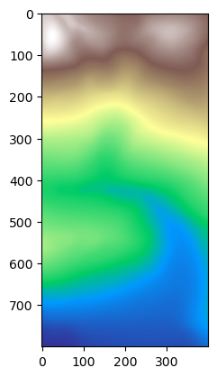
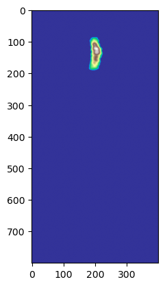

import os
os.environ["ZOOMY_AMREX_HOME"] = "/home/is086873/MBD/Git/amrex"Simulate from DEM
Simulate from FEM
Imports
Warning
You need to modify ZOOMY_AMREX_HOME below to point to your local AMReX installation This test case requires you to have cloned the ZoomyLab/zoomy-amrex subrepository git submodule update --init library/zoomy-amrex. This test case requires you to have cloned the ZoomyLab/data subrepository git submodule update --init data.
from pathlib import Path
import sys
import rasterio
import numpy as np
from sympy import Matrix
os.environ['ZoomyLog'] = 'Default'
os.environ['ZoomyLogLevel'] = 'INFO'
project_root = Path.cwd().parents[2] # 0=current, 1=.., 2=../..
sys.path.append(str(project_root))Load packages
import numpy as np
from sympy import Matrix, Identity
from zoomy_core.model.models.shallow_moments_topo import (
ShallowMomentsTopo,
NumericalShallowMomentsTopo,
)
from zoomy_core.model.custom_sympy_functions import conditional
from zoomy_core.fvm.symbolic_numerics import (
PositiveNonconservativeRusanov,
PositiveRusanov,
Rusanov
)
import zoomy_core.model.initial_conditions as IC
import zoomy_core.model.boundary_conditions as BC
from zoomy_core.misc.misc import Zstruct, ZArray, get_main_directory, Settings
import zoomy_core.transformation.to_amrex as trafo
from tutorials.amrex.helper import create_artificial_raster, show_raster, transform_tiffRead raster data
main_dir = get_main_directory()
dem_path = os.path.join(main_dir, 'data/ravaflow/ca_elev.tif')
ic_water_path = os.path.join(main_dir, 'data/ravaflow/ca_debrisflow.tif')
angle = 0.0
# dem_path = os.path.join(main_dir, 'data/evel_artificial.tif')
# ic_water_path = os.path.join(main_dir, 'data/release_artificial.tif')
# N = 100
# dx = 5.
# M = N * dx
# create_artificial_raster(lambda x, y: 1*np.exp((-(x+0.5*M)**2-y**2)/M/10), (-M, M, -M, M), dx, ic_water_path)
# create_artificial_raster(lambda x, y: 100 * np.exp(-(x+M)**2/M**2), (-M, M, -M, M), dx, dem_path)
# create_artificial_raster(lambda x, y: 1.*np.exp((-(x-1000)**2-(y-3000)**2)/10000.), (0, 2000, 0, 4000), 5, ic_water_path)
# ic_water_path, _ = transform_tiff(ic_water_path, tilt=False)
zoom = [[0, 800], [700,1100]] # [ymin,ymax], [xmin,xmax]
dem_path, angle = transform_tiff(dem_path, tilt=False, scale=1, zoom=zoom)
ic_water_path, _ = transform_tiff(ic_water_path, tilt=False, scale=1, zoom=zoom)
print(f'Tilt angle (degrees): {angle:.2f}')
show_raster(dem_path)
show_raster(ic_water_path)2119.715620611142 -0.2269892939910745 -0.00021292724603583224
Inclination angle: alpha: -12.79 degrees ; theta: -0.01 degrees
0.029961072081823793 -5.212249583065447e-06 -1.1138400164830651e-07
Inclination angle: alpha: -0.00 degrees ; theta: -0.00 degrees
Tilt angle (degrees): 0.00

Model definition
# TODO: Currently, BCs are not implemented in AMReX. This serves as a placeholder aligning with our current sympy interface
bcs = BC.BoundaryConditions(
[
BC.Extrapolation(tag="N"),
BC.Extrapolation(tag="S"),
BC.Extrapolation(tag="E"),
BC.Extrapolation(tag="W"),
]
)
class MyModel(NumericalShallowMomentsTopo):
def update_variables(self):
Q = self.variables
h = Q[1]
Qout = ZArray(Q)
h = conditional(h <= 0, 0, h)
Qout[1] = h
eps = self.parameters.eps
factor = h / (h + eps*100.)
for i in range(2, self.n_variables):
Qout[i] *= factor
return Qout
def update_aux_variables(self):
Q = self.variables
Qaux = ZArray(self.aux_variables)
eps = self.parameters.eps
Qaux[0] = Q[1] / (Q[1]**2 + eps)
return ZArray(Qaux)
def source(self):
out = Matrix([0 for i in range(self.n_variables)])
# out += self.newtonian()
# out += self.slip_mod()
# out += self.slip()
return out
level = 0
model = MyModel(
level=level,
dimension=2,
boundary_conditions=bcs,
parameters=Zstruct(g=9.81, ey=np.sin(np.radians(-angle)), ez=np.cos(np.radians(-angle)), nu=0.000001, lamda=1/1000., rho=1000, c_slipmod=1/30, C=300, eps=1e-6),
aux_variables = ['hinv'],
)
class Numerics(PositiveRusanov):
def get_viscosity_identity_flux(self):
Id = Matrix(Identity(self.model.n_variables))
lvl = self.model.level
offset = lvl + 1
Id = 0 * Id
Id[1, 1] = 1
Id[2, 2] = 1
Id[2 + offset, 2 + offset] = 1
return ZArray(Id)
def get_viscosity_identity_fluctuations(self):
Id = Matrix(Identity(self.model.n_variables))
Id[0, 0] = 0
lvl = self.model.level
offset = lvl + 1
Id = 0 * Id
Id[1, 1] = 0
Id[2, 2] = 0
Id[2 + offset, 2 + offset] = 0
return ZArray(Id)
numerics = Numerics(model)Print the Model definition
print(model.parameters.keys())
print(model.parameter_values)['g', 'ey', 'ez', 'nu', 'lamda', 'rho', 'c_slipmod', 'C', 'eps']
[9.81000000e+00 0.00000000e+00 1.00000000e+00 1.00000000e-06
1.00000000e-03 1.00000000e+03 3.33333333e-02 3.00000000e+02
1.00000000e-06]Note that this is the numerical model, hence we explicitly use hinv instead of 1/h and apply regularization. Also note that in the numerical model, the eigenvalues are ‘truncated’ in the sense that we return 0 eigenvalues for try cells.
model.flux() + model.hydrostatic_pressure()\(\displaystyle \left[\begin{matrix}0 & 0\\hinv q_{1} q_{2} & hinv q_{1} q_{3}\\\frac{ez g q_{1}^{2}}{2} + hinv^{2} q_{1} q_{2}^{2} & hinv^{2} q_{1} q_{2} q_{3}\\hinv^{2} q_{1} q_{2} q_{3} & \frac{ez g q_{1}^{2}}{2} + hinv^{2} q_{1} q_{3}^{2}\end{matrix}\right]\)
model.nonconservative_matrix()\(\displaystyle \left[\begin{matrix}\left[\begin{matrix}0 & 0\\0 & 0\\0 & 0\\0 & 0\end{matrix}\right] & \left[\begin{matrix}0 & 0\\0 & 0\\0 & 0\\0 & 0\end{matrix}\right] & \left[\begin{matrix}0 & 0\\0 & 0\\0 & 0\\0 & 0\end{matrix}\right] & \left[\begin{matrix}0 & 0\\0 & 0\\0 & 0\\0 & 0\end{matrix}\right]\end{matrix}\right]\)
model.source()\(\displaystyle \left[\begin{matrix}0\\0\\0\\0\end{matrix}\right]\)
model.eigenvalues()\(\displaystyle \left[\begin{matrix}\operatorname{conditional}{\left(q_{1} > eps,0,0 \right)} & \operatorname{conditional}{\left(q_{1} > eps,\frac{n_{0} q_{2} + n_{1} q_{3}}{q_{1}},0 \right)} & \operatorname{conditional}{\left(q_{1} > eps,\frac{- \sqrt{ez} \sqrt{g} q_{1}^{\frac{3}{2}} \sqrt{n_{0}^{2} + n_{1}^{2}} + n_{0} q_{2} + n_{1} q_{3}}{q_{1}},0 \right)} & \operatorname{conditional}{\left(q_{1} > eps,\frac{\sqrt{ez} \sqrt{g} q_{1}^{\frac{3}{2}} \sqrt{n_{0}^{2} + n_{1}^{2}} + n_{0} q_{2} + n_{1} q_{3}}{q_{1}},0 \right)}\end{matrix}\right]\)
Code transformation and AMReX compilation
if you want to “clean” and compile from scratch, Comment in “make clean” two cells below.
import shutil
from pathlib import Path
settings = Settings(name="ShallowMoments", output=Zstruct(directory=f"outputs/amrex_{level}"))
source_dir = Path(os.path.join(main_dir, 'library/zoomy_amrex/Exec'))
output_dir = Path(os.path.join(main_dir, settings.output.directory))
if os.path.exists(output_dir):
shutil.rmtree(output_dir)
trafo.AmrexModel.write_code(model, settings)
trafo.AmrexNumerics.write_code(numerics, settings)
# trafo.write_code(model, settings)
main_dir = get_main_directory()
os.environ['ZOOMY_AMREX_MODEL'] = os.path.join(main_dir, os.path.join(settings.output.directory, '.amrex_interface'))2026-03-10 06:27:26.264 | WARNING | zoomy_core.misc.misc:__init__:391 - No 'filename' attribute found in Settings.output Zstruct. Default: 'simulation' 2026-03-10 06:27:26.265 | WARNING | zoomy_core.misc.misc:__init__:391 - No 'clean_directory' attribute found in Settings.output Zstruct. Default: 'False' 2026-03-10 06:27:26.265 | WARNING | zoomy_core.misc.misc:__init__:391 - No 'snapshots' attribute found in Settings.output Zstruct. Default: '2'
What have we gained?
- A C++ file containing the translation of our symbolical PDE model
- A C++ file containing the translatoin of our numerical Riemann solver, including Wet-dry front treatment.
Let’s have a look at the code now!
Model.H
main_dir = get_main_directory()
path = os.path.join(main_dir, os.path.join(settings.output.directory, '.amrex_interface/Model.H'))
with open(path, "r") as f:
print(f.read())#pragma once
#include <AMReX_Array4.H>
#include <AMReX_Vector.H>
#include <AMReX_SmallMatrix.H>
#include <vector>
#include <string>
#include <algorithm>
#ifdef __CUDACC__
#define PORTABLE_FN __host__ __device__
#else
#define PORTABLE_FN
#endif
struct Model {
using T = amrex::Real;
static constexpr int n_dof_q = 4;
static constexpr int n_dof_qaux = 1;
static constexpr int n_parameters = 9;
static constexpr int dimension = 2;
static constexpr int n_boundary_tags = 4;
static const std::vector<std::string> get_boundary_tags() { return { "E", "N", "S", "W" }; }
static const std::vector<std::string> parameter_names() { return { "g", "ey", "ez", "nu", "lamda", "rho", "c_slipmod", "C", "eps" }; }
static const std::vector<T> default_parameters() { return { 9.81, 0.0, 1.0, 1e-06, 0.001, 1000.0, 0.03333333333333333, 300.0, 1e-06 }; }
AMREX_GPU_HOST_DEVICE AMREX_FORCE_INLINE
static amrex::SmallMatrix<amrex::Real,8,1> flux(
amrex::SmallMatrix<amrex::Real,4,1> const& Q,
amrex::SmallMatrix<amrex::Real,1,1> const& Qaux,
amrex::SmallMatrix<amrex::Real,9,1> const& p) noexcept
{
amrex::Real t0 = Qaux(0, 0)*Q(1, 0);
amrex::Real t1 = amrex::Math::powi<2>(Qaux(0, 0))*Q(1, 0);
amrex::Real t2 = Q(2, 0)*Q(3, 0)*t1;
amrex::SmallMatrix<amrex::Real,8,1> res;
res(0, 0) = 0;
res(1, 0) = 0;
res(2, 0) = Q(2, 0)*t0;
res(3, 0) = Q(3, 0)*t0;
res(4, 0) = amrex::Math::powi<2>(Q(2, 0))*t1;
res(5, 0) = t2;
res(6, 0) = t2;
res(7, 0) = amrex::Math::powi<2>(Q(3, 0))*t1;
return res;
}
AMREX_GPU_HOST_DEVICE AMREX_FORCE_INLINE
static amrex::SmallMatrix<amrex::Real,8,1> dflux(
amrex::SmallMatrix<amrex::Real,4,1> const& Q,
amrex::SmallMatrix<amrex::Real,1,1> const& Qaux,
amrex::SmallMatrix<amrex::Real,9,1> const& p) noexcept
{
amrex::SmallMatrix<amrex::Real,8,1> res;
res(0, 0) = 0;
res(1, 0) = 0;
res(2, 0) = 0;
res(3, 0) = 0;
res(4, 0) = 0;
res(5, 0) = 0;
res(6, 0) = 0;
res(7, 0) = 0;
return res;
}
AMREX_GPU_HOST_DEVICE AMREX_FORCE_INLINE
static amrex::SmallMatrix<amrex::Real,8,1> hydrostatic_pressure(
amrex::SmallMatrix<amrex::Real,4,1> const& Q,
amrex::SmallMatrix<amrex::Real,1,1> const& Qaux,
amrex::SmallMatrix<amrex::Real,9,1> const& p) noexcept
{
amrex::Real t0 = (1.0/2.0)*p(2, 0)*p(0, 0)*amrex::Math::powi<2>(Q(1, 0));
amrex::SmallMatrix<amrex::Real,8,1> res;
res(0, 0) = 0;
res(1, 0) = 0;
res(2, 0) = 0;
res(3, 0) = 0;
res(4, 0) = t0;
res(5, 0) = 0;
res(6, 0) = 0;
res(7, 0) = t0;
return res;
}
AMREX_GPU_HOST_DEVICE AMREX_FORCE_INLINE
static amrex::SmallMatrix<amrex::Real,32,1> nonconservative_matrix(
amrex::SmallMatrix<amrex::Real,4,1> const& Q,
amrex::SmallMatrix<amrex::Real,1,1> const& Qaux,
amrex::SmallMatrix<amrex::Real,9,1> const& p) noexcept
{
amrex::SmallMatrix<amrex::Real,32,1> res;
res(0, 0) = 0;
res(1, 0) = 0;
res(2, 0) = 0;
res(3, 0) = 0;
res(4, 0) = 0;
res(5, 0) = 0;
res(6, 0) = 0;
res(7, 0) = 0;
res(8, 0) = 0;
res(9, 0) = 0;
res(10, 0) = 0;
res(11, 0) = 0;
res(12, 0) = 0;
res(13, 0) = 0;
res(14, 0) = 0;
res(15, 0) = 0;
res(16, 0) = 0;
res(17, 0) = 0;
res(18, 0) = 0;
res(19, 0) = 0;
res(20, 0) = 0;
res(21, 0) = 0;
res(22, 0) = 0;
res(23, 0) = 0;
res(24, 0) = 0;
res(25, 0) = 0;
res(26, 0) = 0;
res(27, 0) = 0;
res(28, 0) = 0;
res(29, 0) = 0;
res(30, 0) = 0;
res(31, 0) = 0;
return res;
}
AMREX_GPU_HOST_DEVICE AMREX_FORCE_INLINE
static amrex::SmallMatrix<amrex::Real,32,1> quasilinear_matrix(
amrex::SmallMatrix<amrex::Real,4,1> const& Q,
amrex::SmallMatrix<amrex::Real,1,1> const& Qaux,
amrex::SmallMatrix<amrex::Real,9,1> const& p) noexcept
{
amrex::Real t0 = Qaux(0, 0)*Q(1, 0);
amrex::Real t1 = p(2, 0)*p(0, 0)*Q(1, 0);
amrex::Real t2 = amrex::Math::powi<2>(Qaux(0, 0));
amrex::Real t3 = Q(3, 0)*t2;
amrex::Real t4 = Q(2, 0)*t3;
amrex::Real t5 = Q(1, 0)*Q(2, 0)*t2;
amrex::Real t6 = Q(1, 0)*t3;
amrex::SmallMatrix<amrex::Real,32,1> res;
res(0, 0) = 0;
res(1, 0) = 0;
res(2, 0) = 0;
res(3, 0) = 0;
res(4, 0) = 0;
res(5, 0) = 0;
res(6, 0) = 0;
res(7, 0) = 0;
res(8, 0) = 0;
res(9, 0) = 0;
res(10, 0) = Qaux(0, 0)*Q(2, 0);
res(11, 0) = Qaux(0, 0)*Q(3, 0);
res(12, 0) = t0;
res(13, 0) = 0;
res(14, 0) = 0;
res(15, 0) = t0;
res(16, 0) = 0;
res(17, 0) = 0;
res(18, 0) = amrex::Math::powi<2>(Q(2, 0))*t2 + t1;
res(19, 0) = t4;
res(20, 0) = 2*t5;
res(21, 0) = t6;
res(22, 0) = 0;
res(23, 0) = t5;
res(24, 0) = 0;
res(25, 0) = 0;
res(26, 0) = t4;
res(27, 0) = amrex::Math::powi<2>(Q(3, 0))*t2 + t1;
res(28, 0) = t6;
res(29, 0) = 0;
res(30, 0) = t5;
res(31, 0) = 2*t6;
return res;
}
AMREX_GPU_HOST_DEVICE AMREX_FORCE_INLINE
static amrex::SmallMatrix<amrex::Real,4,1> eigenvalues(
amrex::SmallMatrix<amrex::Real,4,1> const& Q,
amrex::SmallMatrix<amrex::Real,1,1> const& Qaux,
amrex::SmallMatrix<amrex::Real,9,1> const& p,
amrex::SmallMatrix<amrex::Real,2,1> const& n) noexcept
{
amrex::Real t0 = Q(1, 0) > p(8, 0);
amrex::Real t1 = (1.0 / amrex::Math::powi<1>(Q(1, 0)));
amrex::Real t2 = n(0, 0)*Q(2, 0) + n(1, 0)*Q(3, 0);
amrex::Real t3 = std::pow(p(2, 0), 1.0/2.0)*std::pow(p(0, 0), 1.0/2.0)*std::pow(Q(1, 0), 3.0/2.0)*std::pow(amrex::Math::powi<2>(n(0, 0)) + amrex::Math::powi<2>(n(1, 0)), 1.0/2.0);
amrex::SmallMatrix<amrex::Real,4,1> res;
res(0, 0) = ((t0) ? (0) : (0));
res(1, 0) = ((t0) ? (t1*t2) : (0));
res(2, 0) = ((t0) ? (t1*(t2 - t3)) : (0));
res(3, 0) = ((t0) ? (t1*(t2 + t3)) : (0));
return res;
}
AMREX_GPU_HOST_DEVICE AMREX_FORCE_INLINE
static amrex::SmallMatrix<amrex::Real,16,1> left_eigenvectors(
amrex::SmallMatrix<amrex::Real,4,1> const& Q,
amrex::SmallMatrix<amrex::Real,1,1> const& Qaux,
amrex::SmallMatrix<amrex::Real,9,1> const& p,
amrex::SmallMatrix<amrex::Real,2,1> const& n) noexcept
{
amrex::SmallMatrix<amrex::Real,16,1> res;
res(0, 0) = 0;
res(1, 0) = 0;
res(2, 0) = 0;
res(3, 0) = 0;
res(4, 0) = 0;
res(5, 0) = 0;
res(6, 0) = 0;
res(7, 0) = 0;
res(8, 0) = 0;
res(9, 0) = 0;
res(10, 0) = 0;
res(11, 0) = 0;
res(12, 0) = 0;
res(13, 0) = 0;
res(14, 0) = 0;
res(15, 0) = 0;
return res;
}
AMREX_GPU_HOST_DEVICE AMREX_FORCE_INLINE
static amrex::SmallMatrix<amrex::Real,16,1> right_eigenvectors(
amrex::SmallMatrix<amrex::Real,4,1> const& Q,
amrex::SmallMatrix<amrex::Real,1,1> const& Qaux,
amrex::SmallMatrix<amrex::Real,9,1> const& p,
amrex::SmallMatrix<amrex::Real,2,1> const& n) noexcept
{
amrex::SmallMatrix<amrex::Real,16,1> res;
res(0, 0) = 0;
res(1, 0) = 0;
res(2, 0) = 0;
res(3, 0) = 0;
res(4, 0) = 0;
res(5, 0) = 0;
res(6, 0) = 0;
res(7, 0) = 0;
res(8, 0) = 0;
res(9, 0) = 0;
res(10, 0) = 0;
res(11, 0) = 0;
res(12, 0) = 0;
res(13, 0) = 0;
res(14, 0) = 0;
res(15, 0) = 0;
return res;
}
AMREX_GPU_HOST_DEVICE AMREX_FORCE_INLINE
static amrex::SmallMatrix<amrex::Real,4,1> source(
amrex::SmallMatrix<amrex::Real,4,1> const& Q,
amrex::SmallMatrix<amrex::Real,1,1> const& Qaux,
amrex::SmallMatrix<amrex::Real,9,1> const& p) noexcept
{
amrex::SmallMatrix<amrex::Real,4,1> res;
res(0, 0) = 0;
res(1, 0) = 0;
res(2, 0) = 0;
res(3, 0) = 0;
return res;
}
AMREX_GPU_HOST_DEVICE AMREX_FORCE_INLINE
static amrex::SmallMatrix<amrex::Real,16,1> source_jacobian_wrt_variables(
amrex::SmallMatrix<amrex::Real,4,1> const& Q,
amrex::SmallMatrix<amrex::Real,1,1> const& Qaux,
amrex::SmallMatrix<amrex::Real,9,1> const& p) noexcept
{
amrex::SmallMatrix<amrex::Real,16,1> res;
res(0, 0) = 0;
res(1, 0) = 0;
res(2, 0) = 0;
res(3, 0) = 0;
res(4, 0) = 0;
res(5, 0) = 0;
res(6, 0) = 0;
res(7, 0) = 0;
res(8, 0) = 0;
res(9, 0) = 0;
res(10, 0) = 0;
res(11, 0) = 0;
res(12, 0) = 0;
res(13, 0) = 0;
res(14, 0) = 0;
res(15, 0) = 0;
return res;
}
AMREX_GPU_HOST_DEVICE AMREX_FORCE_INLINE
static amrex::SmallMatrix<amrex::Real,4,1> source_jacobian_wrt_aux_variables(
amrex::SmallMatrix<amrex::Real,4,1> const& Q,
amrex::SmallMatrix<amrex::Real,1,1> const& Qaux,
amrex::SmallMatrix<amrex::Real,9,1> const& p) noexcept
{
amrex::SmallMatrix<amrex::Real,4,1> res;
res(0, 0) = 0;
res(1, 0) = 0;
res(2, 0) = 0;
res(3, 0) = 0;
return res;
}
AMREX_GPU_HOST_DEVICE AMREX_FORCE_INLINE
static amrex::SmallMatrix<amrex::Real,6,1> project_2d_to_3d(
amrex::SmallMatrix<amrex::Real,3,1> const& X,
amrex::SmallMatrix<amrex::Real,4,1> const& Q,
amrex::SmallMatrix<amrex::Real,1,1> const& Qaux,
amrex::SmallMatrix<amrex::Real,9,1> const& p) noexcept
{
amrex::SmallMatrix<amrex::Real,6,1> res;
res(0, 0) = Q(0, 0);
res(1, 0) = Q(1, 0);
res(2, 0) = Qaux(0, 0)*Q(2, 0);
res(3, 0) = Qaux(0, 0)*Q(3, 0);
res(4, 0) = 0;
res(5, 0) = 9810.0*Q(1, 0)*(1 - X(2, 0));
return res;
}
AMREX_GPU_HOST_DEVICE AMREX_FORCE_INLINE
static amrex::SmallMatrix<amrex::Real,4,1> project_3d_to_2d(
amrex::SmallMatrix<amrex::Real,4,1> const& Q,
amrex::SmallMatrix<amrex::Real,1,1> const& Qaux,
amrex::SmallMatrix<amrex::Real,9,1> const& p) noexcept
{
amrex::SmallMatrix<amrex::Real,4,1> res;
res(0, 0) = 0;
res(1, 0) = 0;
res(2, 0) = 0;
res(3, 0) = 0;
return res;
}
AMREX_GPU_HOST_DEVICE AMREX_FORCE_INLINE
static amrex::SmallMatrix<amrex::Real,4,1> residual(
amrex::Real const time,
amrex::SmallMatrix<amrex::Real,3,1> const& X,
amrex::Real const dX,
amrex::SmallMatrix<amrex::Real,4,1> const& Q,
amrex::SmallMatrix<amrex::Real,1,1> const& Qaux,
amrex::SmallMatrix<amrex::Real,9,1> const& p) noexcept
{
amrex::SmallMatrix<amrex::Real,4,1> res;
res(0, 0) = 0;
res(1, 0) = 0;
res(2, 0) = 0;
res(3, 0) = 0;
return res;
}
AMREX_GPU_HOST_DEVICE AMREX_FORCE_INLINE
static amrex::SmallMatrix<amrex::Real,4,1> interpolate(
amrex::SmallMatrix<amrex::Real,4,1> const& Q,
amrex::SmallMatrix<amrex::Real,1,1> const& Qaux,
amrex::SmallMatrix<amrex::Real,9,1> const& p) noexcept
{
amrex::SmallMatrix<amrex::Real,4,1> res;
res(0, 0) = Q(0, 0);
res(1, 0) = Q(1, 0);
res(2, 0) = Q(2, 0);
res(3, 0) = Q(3, 0);
return res;
}
AMREX_GPU_HOST_DEVICE AMREX_FORCE_INLINE
static amrex::SmallMatrix<amrex::Real,4,1> initial_condition(
amrex::SmallMatrix<amrex::Real,3,1> const& X,
amrex::SmallMatrix<amrex::Real,9,1> const& p) noexcept
{
amrex::SmallMatrix<amrex::Real,4,1> res;
res(0, 0) = 0;
res(1, 0) = 0;
res(2, 0) = 0;
res(3, 0) = 0;
return res;
}
AMREX_GPU_HOST_DEVICE AMREX_FORCE_INLINE
static amrex::SmallMatrix<amrex::Real,1,1> initial_aux_condition(
amrex::SmallMatrix<amrex::Real,3,1> const& X,
amrex::SmallMatrix<amrex::Real,9,1> const& p) noexcept
{
amrex::SmallMatrix<amrex::Real,1,1> res;
res(0, 0) = 0;
return res;
}
AMREX_GPU_HOST_DEVICE AMREX_FORCE_INLINE
static amrex::SmallMatrix<amrex::Real,4,1> update_variables(
amrex::SmallMatrix<amrex::Real,4,1> const& Q,
amrex::SmallMatrix<amrex::Real,1,1> const& Qaux,
amrex::SmallMatrix<amrex::Real,9,1> const& p) noexcept
{
amrex::Real t0 = ((false) ? (0) : (Q(1, 0)));
amrex::Real t1 = t0/(100.0*p(8, 0) + t0);
amrex::SmallMatrix<amrex::Real,4,1> res;
res(0, 0) = Q(0, 0);
res(1, 0) = t0;
res(2, 0) = Q(2, 0)*t1;
res(3, 0) = Q(3, 0)*t1;
return res;
}
AMREX_GPU_HOST_DEVICE AMREX_FORCE_INLINE
static amrex::SmallMatrix<amrex::Real,1,1> update_aux_variables(
amrex::SmallMatrix<amrex::Real,4,1> const& Q,
amrex::SmallMatrix<amrex::Real,1,1> const& Qaux,
amrex::SmallMatrix<amrex::Real,9,1> const& p) noexcept
{
amrex::SmallMatrix<amrex::Real,1,1> res;
res(0, 0) = Q(1, 0)/(p(8, 0) + amrex::Math::powi<2>(Q(1, 0)));
return res;
}
AMREX_GPU_HOST_DEVICE AMREX_FORCE_INLINE
static amrex::SmallMatrix<amrex::Real,16,1> update_variables_jacobian_wrt_variables(
amrex::SmallMatrix<amrex::Real,4,1> const& Q,
amrex::SmallMatrix<amrex::Real,1,1> const& Qaux,
amrex::SmallMatrix<amrex::Real,9,1> const& p) noexcept
{
amrex::Real t0 = ((false) ? (0) : (1));
amrex::Real t1 = ((false) ? (0) : (Q(1, 0)));
amrex::Real t2 = 100.0*p(8, 0) + t1;
amrex::Real t3 = (1.0 / amrex::Math::powi<1>(t2));
amrex::Real t4 = t0*t3;
amrex::Real t5 = t0*t1/amrex::Math::powi<2>(t2);
amrex::Real t6 = t1*t3;
amrex::SmallMatrix<amrex::Real,16,1> res;
res(0, 0) = 1;
res(1, 0) = 0;
res(2, 0) = 0;
res(3, 0) = 0;
res(4, 0) = 0;
res(5, 0) = t0;
res(6, 0) = Q(2, 0)*t4 - Q(2, 0)*t5;
res(7, 0) = Q(3, 0)*t4 - Q(3, 0)*t5;
res(8, 0) = 0;
res(9, 0) = 0;
res(10, 0) = t6;
res(11, 0) = 0;
res(12, 0) = 0;
res(13, 0) = 0;
res(14, 0) = 0;
res(15, 0) = t6;
return res;
}
AMREX_GPU_HOST_DEVICE AMREX_FORCE_INLINE
static amrex::SmallMatrix<amrex::Real,4,1> update_aux_variables_jacobian_wrt_variables(
amrex::SmallMatrix<amrex::Real,4,1> const& Q,
amrex::SmallMatrix<amrex::Real,1,1> const& Qaux,
amrex::SmallMatrix<amrex::Real,9,1> const& p) noexcept
{
amrex::Real t0 = amrex::Math::powi<2>(Q(1, 0));
amrex::Real t1 = p(8, 0) + t0;
amrex::SmallMatrix<amrex::Real,4,1> res;
res(0, 0) = 0;
res(1, 0) = -2*t0/amrex::Math::powi<2>(t1) + (1.0 / amrex::Math::powi<1>(t1));
res(2, 0) = 0;
res(3, 0) = 0;
return res;
}
AMREX_GPU_HOST_DEVICE AMREX_FORCE_INLINE
static amrex::SmallMatrix<amrex::Real,4,1> boundary_conditions(
const int bc_idx,
amrex::SmallMatrix<amrex::Real,4,1> const& Q,
amrex::SmallMatrix<amrex::Real,1,1> const& Qaux,
amrex::SmallMatrix<amrex::Real,2,1> const& n,
amrex::SmallMatrix<amrex::Real,3,1> const& X,
amrex::Real const time,
amrex::Real const dX) noexcept
{
if (bc_idx == 0 || bc_idx == 1 || bc_idx == 2 || bc_idx == 3) {
amrex::SmallMatrix<amrex::Real,4,1> res;
res(0, 0) = Q(0, 0);
res(1, 0) = Q(1, 0);
res(2, 0) = Q(2, 0);
res(3, 0) = Q(3, 0);
return res;
}
amrex::SmallMatrix<amrex::Real,4,1> default_res{};
return default_res;
}
AMREX_GPU_HOST_DEVICE AMREX_FORCE_INLINE
static amrex::SmallMatrix<amrex::Real,1,1> aux_boundary_conditions(
const int bc_idx,
amrex::SmallMatrix<amrex::Real,4,1> const& Q,
amrex::SmallMatrix<amrex::Real,1,1> const& Qaux,
amrex::SmallMatrix<amrex::Real,2,1> const& n,
amrex::SmallMatrix<amrex::Real,3,1> const& X,
amrex::Real const time,
amrex::Real const dX) noexcept
{
if (bc_idx == 0 || bc_idx == 1 || bc_idx == 2 || bc_idx == 3) {
amrex::SmallMatrix<amrex::Real,1,1> res;
res(0, 0) = Qaux(0, 0);
return res;
}
amrex::SmallMatrix<amrex::Real,1,1> default_res{};
return default_res;
}
};
Numerics.H
main_dir = get_main_directory()
path = os.path.join(main_dir, os.path.join(settings.output.directory, '.amrex_interface/Numerics.H'))
with open(path, "r") as f:
print(f.read())#pragma once
#include <AMReX_Array4.H>
#include <AMReX_Vector.H>
#include <AMReX_SmallMatrix.H>
#include "Model.H"
#include <vector>
#include <algorithm>
#ifdef __CUDACC__
#define PORTABLE_FN __host__ __device__
#else
#define PORTABLE_FN
#endif
struct Numerics {
using T = amrex::Real;
static constexpr int n_dof_q = 4;
AMREX_GPU_HOST_DEVICE AMREX_FORCE_INLINE
static amrex::SmallMatrix<amrex::Real,4,1> numerical_flux(
amrex::SmallMatrix<amrex::Real,4,1> const& Q_minus,
amrex::SmallMatrix<amrex::Real,4,1> const& Q_plus,
amrex::SmallMatrix<amrex::Real,1,1> const& Qaux_minus,
amrex::SmallMatrix<amrex::Real,1,1> const& Qaux_plus,
amrex::SmallMatrix<amrex::Real,9,1> const& p,
amrex::SmallMatrix<amrex::Real,2,1> const& n) noexcept
{
amrex::Real t0 = amrex::max(Q_minus(0, 0), Q_plus(0, 0));
amrex::Real t1 = -t0;
amrex::Real t2 = amrex::max(0.0, Q_minus(0, 0) + Q_minus(1, 0) + t1);
amrex::Real t3 = t2/amrex::max(Q_minus(1, 0), p(8, 0));
amrex::Real t4 = amrex::max(0.0, Q_plus(0, 0) + Q_plus(1, 0) + t1);
amrex::Real t5 = t4/amrex::max(Q_plus(1, 0), p(8, 0));
amrex::SmallMatrix<amrex::Real,4,1> v_arg_0{};
v_arg_0(0, 0) = t0;
v_arg_0(1, 0) = t2;
v_arg_0(2, 0) = Q_minus(2, 0)*t3;
v_arg_0(3, 0) = Q_minus(3, 0)*t3;
amrex::SmallMatrix<amrex::Real,1,1> v_arg_1{};
v_arg_1(0, 0) = (1.0 / amrex::Math::powi<1>(p(8, 0) + t2));
amrex::SmallMatrix<amrex::Real,9,1> v_arg_2{};
v_arg_2(0, 0) = p(0, 0);
v_arg_2(1, 0) = p(1, 0);
v_arg_2(2, 0) = p(2, 0);
v_arg_2(3, 0) = p(3, 0);
v_arg_2(4, 0) = p(4, 0);
v_arg_2(5, 0) = p(5, 0);
v_arg_2(6, 0) = p(6, 0);
v_arg_2(7, 0) = p(7, 0);
v_arg_2(8, 0) = p(8, 0);
amrex::SmallMatrix<amrex::Real,4,1> v_arg_3{};
v_arg_3(0, 0) = t0;
v_arg_3(1, 0) = t4;
v_arg_3(2, 0) = Q_plus(2, 0)*t5;
v_arg_3(3, 0) = Q_plus(3, 0)*t5;
amrex::SmallMatrix<amrex::Real,1,1> v_arg_4{};
v_arg_4(0, 0) = (1.0 / amrex::Math::powi<1>(p(8, 0) + t4));
amrex::SmallMatrix<amrex::Real,2,1> v_arg_5{};
v_arg_5(0, 0) = n(0, 0);
v_arg_5(1, 0) = n(1, 0);
auto v_call_0 = Model::flux(v_arg_0, v_arg_1, v_arg_2);
auto v_call_1 = Model::hydrostatic_pressure(v_arg_0, v_arg_1, v_arg_2);
auto v_call_2 = Model::flux(v_arg_3, v_arg_4, v_arg_2);
auto v_call_3 = Model::hydrostatic_pressure(v_arg_3, v_arg_4, v_arg_2);
auto v_call_4 = Model::eigenvalues(v_arg_0, v_arg_1, v_arg_2, v_arg_5);
auto v_call_5 = Model::eigenvalues(v_arg_3, v_arg_4, v_arg_2, v_arg_5);
amrex::Real t6 = 0.5*n(0, 0);
amrex::Real t7 = 0.5*n(1, 0);
amrex::Real t8 = -amrex::max(Q_minus(0, 0), Q_plus(0, 0));
amrex::Real t9 = amrex::max(0.0, Q_minus(0, 0) + Q_minus(1, 0) + t8);
amrex::Real t10 = amrex::max(0.0, Q_plus(0, 0) + Q_plus(1, 0) + t8);
amrex::Real t11 = 0.5*amrex::max(std::abs(v_call_4(0, 0)), amrex::max(std::abs(v_call_4(1, 0)), amrex::max(std::abs(v_call_4(2, 0)), amrex::max(std::abs(v_call_4(3, 0)), amrex::max(std::abs(v_call_5(0, 0)), amrex::max(std::abs(v_call_5(1, 0)), amrex::max(std::abs(v_call_5(2, 0)), std::abs(v_call_5(3, 0)))))))));
amrex::Real t12 = t9/amrex::max(Q_minus(1, 0), p(8, 0));
amrex::Real t13 = (1.0 / amrex::Math::powi<1>(amrex::max(Q_plus(1, 0), p(8, 0))));
amrex::SmallMatrix<amrex::Real,4,1> res;
res(0, 0) = t6*(v_call_0(0, 0) + v_call_1(0, 0)) + t6*(v_call_2(0, 0) + v_call_3(0, 0)) + t7*(v_call_0(1, 0) + v_call_1(1, 0)) + t7*(v_call_2(1, 0) + v_call_3(1, 0));
res(1, 0) = -t11*(t10 - t9) + t6*(v_call_0(2, 0) + v_call_1(2, 0)) + t6*(v_call_2(2, 0) + v_call_3(2, 0)) + t7*(v_call_0(3, 0) + v_call_1(3, 0)) + t7*(v_call_2(3, 0) + v_call_3(3, 0));
res(2, 0) = -t11*(-Q_minus(2, 0)*t12 + Q_plus(2, 0)*t10*t13) + t6*(v_call_0(4, 0) + v_call_1(4, 0)) + t6*(v_call_2(4, 0) + v_call_3(4, 0)) + t7*(v_call_0(5, 0) + v_call_1(5, 0)) + t7*(v_call_2(5, 0) + v_call_3(5, 0));
res(3, 0) = -t11*(-Q_minus(3, 0)*t12 + Q_plus(3, 0)*t10*t13) + t6*(v_call_0(6, 0) + v_call_1(6, 0)) + t6*(v_call_2(6, 0) + v_call_3(6, 0)) + t7*(v_call_0(7, 0) + v_call_1(7, 0)) + t7*(v_call_2(7, 0) + v_call_3(7, 0));
return res;
}
AMREX_GPU_HOST_DEVICE AMREX_FORCE_INLINE
static amrex::SmallMatrix<amrex::Real,8,1> numerical_fluctuations(
amrex::SmallMatrix<amrex::Real,4,1> const& Q_minus,
amrex::SmallMatrix<amrex::Real,4,1> const& Q_plus,
amrex::SmallMatrix<amrex::Real,1,1> const& Qaux_minus,
amrex::SmallMatrix<amrex::Real,1,1> const& Qaux_plus,
amrex::SmallMatrix<amrex::Real,9,1> const& p,
amrex::SmallMatrix<amrex::Real,2,1> const& n) noexcept
{
amrex::Real t0 = amrex::max(Q_minus(0, 0), Q_plus(0, 0));
amrex::Real t1 = -t0;
amrex::Real t2 = amrex::max(0.0, Q_plus(0, 0) + Q_plus(1, 0) + t1);
amrex::Real t3 = t2/amrex::max(Q_plus(1, 0), p(8, 0));
amrex::Real t4 = amrex::max(0.0, Q_minus(0, 0) + Q_minus(1, 0) + t1);
amrex::Real t5 = t4/amrex::max(Q_minus(1, 0), p(8, 0));
amrex::SmallMatrix<amrex::Real,9,1> v_arg_0{};
v_arg_0(0, 0) = p(0, 0);
v_arg_0(1, 0) = p(1, 0);
v_arg_0(2, 0) = p(2, 0);
v_arg_0(3, 0) = p(3, 0);
v_arg_0(4, 0) = p(4, 0);
v_arg_0(5, 0) = p(5, 0);
v_arg_0(6, 0) = p(6, 0);
v_arg_0(7, 0) = p(7, 0);
v_arg_0(8, 0) = p(8, 0);
amrex::SmallMatrix<amrex::Real,4,1> v_arg_1{};
v_arg_1(0, 0) = t0;
v_arg_1(1, 0) = t2;
v_arg_1(2, 0) = Q_plus(2, 0)*t3;
v_arg_1(3, 0) = Q_plus(3, 0)*t3;
amrex::SmallMatrix<amrex::Real,1,1> v_arg_2{};
v_arg_2(0, 0) = (1.0 / amrex::Math::powi<1>(p(8, 0) + t2));
amrex::SmallMatrix<amrex::Real,4,1> v_arg_3{};
v_arg_3(0, 0) = t0;
v_arg_3(1, 0) = t4;
v_arg_3(2, 0) = Q_minus(2, 0)*t5;
v_arg_3(3, 0) = Q_minus(3, 0)*t5;
amrex::SmallMatrix<amrex::Real,1,1> v_arg_4{};
v_arg_4(0, 0) = (1.0 / amrex::Math::powi<1>(p(8, 0) + t4));
auto v_call_0 = Model::hydrostatic_pressure(Q_plus, Qaux_plus, v_arg_0);
auto v_call_1 = Model::hydrostatic_pressure(v_arg_1, v_arg_2, v_arg_0);
auto v_call_2 = Model::hydrostatic_pressure(v_arg_3, v_arg_4, v_arg_0);
auto v_call_3 = Model::hydrostatic_pressure(Q_minus, Qaux_minus, v_arg_0);
amrex::SmallMatrix<amrex::Real,8,1> res;
res(0, 0) = n(0, 0)*(-v_call_0(0, 0) + v_call_1(0, 0)) + n(1, 0)*(-v_call_0(1, 0) + v_call_1(1, 0));
res(1, 0) = n(0, 0)*(-v_call_0(2, 0) + v_call_1(2, 0)) + n(1, 0)*(-v_call_0(3, 0) + v_call_1(3, 0));
res(2, 0) = n(0, 0)*(-v_call_0(4, 0) + v_call_1(4, 0)) + n(1, 0)*(-v_call_0(5, 0) + v_call_1(5, 0));
res(3, 0) = n(0, 0)*(-v_call_0(6, 0) + v_call_1(6, 0)) + n(1, 0)*(-v_call_0(7, 0) + v_call_1(7, 0));
res(4, 0) = n(0, 0)*(-v_call_2(0, 0) + v_call_3(0, 0)) + n(1, 0)*(-v_call_2(1, 0) + v_call_3(1, 0));
res(5, 0) = n(0, 0)*(-v_call_2(2, 0) + v_call_3(2, 0)) + n(1, 0)*(-v_call_2(3, 0) + v_call_3(3, 0));
res(6, 0) = n(0, 0)*(-v_call_2(4, 0) + v_call_3(4, 0)) + n(1, 0)*(-v_call_2(5, 0) + v_call_3(5, 0));
res(7, 0) = n(0, 0)*(-v_call_2(6, 0) + v_call_3(6, 0)) + n(1, 0)*(-v_call_2(7, 0) + v_call_3(7, 0));
return res;
}
AMREX_GPU_HOST_DEVICE AMREX_FORCE_INLINE
static amrex::SmallMatrix<amrex::Real,1,1> local_max_abs_eigenvalue(
amrex::SmallMatrix<amrex::Real,4,1> const& Q,
amrex::SmallMatrix<amrex::Real,1,1> const& Qaux,
amrex::SmallMatrix<amrex::Real,9,1> const& p,
amrex::SmallMatrix<amrex::Real,2,1> const& n) noexcept
{
amrex::SmallMatrix<amrex::Real,4,1> v_arg_0{};
v_arg_0(0, 0) = Q(0, 0);
v_arg_0(1, 0) = Q(1, 0);
v_arg_0(2, 0) = Q(2, 0);
v_arg_0(3, 0) = Q(3, 0);
amrex::SmallMatrix<amrex::Real,1,1> v_arg_1{};
v_arg_1(0, 0) = Qaux(0, 0);
amrex::SmallMatrix<amrex::Real,9,1> v_arg_2{};
v_arg_2(0, 0) = p(0, 0);
v_arg_2(1, 0) = p(1, 0);
v_arg_2(2, 0) = p(2, 0);
v_arg_2(3, 0) = p(3, 0);
v_arg_2(4, 0) = p(4, 0);
v_arg_2(5, 0) = p(5, 0);
v_arg_2(6, 0) = p(6, 0);
v_arg_2(7, 0) = p(7, 0);
v_arg_2(8, 0) = p(8, 0);
amrex::SmallMatrix<amrex::Real,2,1> v_arg_3{};
v_arg_3(0, 0) = n(0, 0);
v_arg_3(1, 0) = n(1, 0);
auto v_call_0 = Model::eigenvalues(v_arg_0, v_arg_1, v_arg_2, v_arg_3);
amrex::SmallMatrix<amrex::Real,1,1> res;
res(0, 0) = amrex::max(std::abs(v_call_0(0, 0)), amrex::max(std::abs(v_call_0(1, 0)), amrex::max(std::abs(v_call_0(2, 0)), std::abs(v_call_0(3, 0)))));
return res;
}
};
Compile
import subprocess
base = os.path.join(main_dir, "library/zoomy_amrex/")
cmds = [
f"cp ../../{settings.output.directory}/.amrex_interface/Model.H ./Source/Model.H",
f"cp ../../{settings.output.directory}/.amrex_interface/Numerics.H ./Source/Numerics.H",
"source setup.sh",
"cd Exec",
#"make clean",
"make",
]
subprocess.run(" && ".join(cmds), shell=True, executable="/bin/zsh", cwd=base)[WARN] OpenMPI's default binding is set to OFF, you can override this
[INFO] Module foss/2024a loaded.
[INFO] Module Python/3.12.3 loaded.
fatal: not a git repository (or any parent up to mount point /rwthfs/rz/cluster/home)
Stopping at filesystem boundary (GIT_DISCOVERY_ACROSS_FILESYSTEM not set).Loading /home/is086873/MBD/Git/amrex/Tools/GNUMake/comps/gnu.mak...
Loading /home/is086873/MBD/Git/amrex/Tools/GNUMake/sites/Make.unknown...
Compiling write_plotfiles.cpp ...
mpicxx -MMD -MP -Werror=return-type -gdwarf-4 -O3 -finline-limit=43210 -std=c++17 -pthread -DBL_USE_MPI -DAMREX_USE_MPI -DAMREX_GPU_MAX_THREADS=0 -DBL_SPACEDIM=3 -DAMREX_SPACEDIM=3 -DBL_FORT_USE_UNDERSCORE -DAMREX_FORT_USE_UNDERSCORE -DBL_Linux -DAMREX_Linux -DNDEBUG -DOMPI_SKIP_MPICXX -Itmp_build_dir/s/3d.gnu.MPI.EXE -I. -I../Source -I/rwthfs/rz/cluster/home/is086873/Git/Zoomy/outputs/amrex_0/.amrex_interface -I/home/is086873/MBD/Git/amrex/Src/Base -I/home/is086873/MBD/Git/amrex/Src/Base/Parser -I/cvmfs/software.hpc.rwth.de/Linux/RH9/x86_64/intel/sapphirerapids/software/OpenMPI/5.0.3-GCC-13.3.0/include -c ../Source/write_plotfiles.cpp -o tmp_build_dir/o/3d.gnu.MPI.EXE/write_plotfiles.o
Compiling main.cpp ...
mpicxx -MMD -MP -Werror=return-type -gdwarf-4 -O3 -finline-limit=43210 -std=c++17 -pthread -DBL_USE_MPI -DAMREX_USE_MPI -DAMREX_GPU_MAX_THREADS=0 -DBL_SPACEDIM=3 -DAMREX_SPACEDIM=3 -DBL_FORT_USE_UNDERSCORE -DAMREX_FORT_USE_UNDERSCORE -DBL_Linux -DAMREX_Linux -DNDEBUG -DOMPI_SKIP_MPICXX -Itmp_build_dir/s/3d.gnu.MPI.EXE -I. -I../Source -I/rwthfs/rz/cluster/home/is086873/Git/Zoomy/outputs/amrex_0/.amrex_interface -I/home/is086873/MBD/Git/amrex/Src/Base -I/home/is086873/MBD/Git/amrex/Src/Base/Parser -I/cvmfs/software.hpc.rwth.de/Linux/RH9/x86_64/intel/sapphirerapids/software/OpenMPI/5.0.3-GCC-13.3.0/include -c ../Source/main.cpp -o tmp_build_dir/o/3d.gnu.MPI.EXE/main.o
Linking main3d.gnu.MPI.ex ...
mpicxx -Werror=return-type -gdwarf-4 -O3 -finline-limit=43210 -std=c++17 -pthread -DBL_USE_MPI -DAMREX_USE_MPI -DAMREX_GPU_MAX_THREADS=0 -DBL_SPACEDIM=3 -DAMREX_SPACEDIM=3 -DBL_FORT_USE_UNDERSCORE -DAMREX_FORT_USE_UNDERSCORE -DBL_Linux -DAMREX_Linux -DNDEBUG -DOMPI_SKIP_MPICXX -Itmp_build_dir/s/3d.gnu.MPI.EXE -I. -I../Source -I/rwthfs/rz/cluster/home/is086873/Git/Zoomy/outputs/amrex_0/.amrex_interface -I/home/is086873/MBD/Git/amrex/Src/Base -I/home/is086873/MBD/Git/amrex/Src/Base/Parser -L. -L/cvmfs/software.hpc.rwth.de/Linux/RH9/x86_64/intel/sapphirerapids/software/GCCcore/13.3.0/lib/gcc/x86_64-pc-linux-gnu/13.3.0/../../../../lib64/ -o main3d.gnu.MPI.ex tmp_build_dir/o/3d.gnu.MPI.EXE/init_solution.o tmp_build_dir/o/3d.gnu.MPI.EXE/write_plotfiles.o tmp_build_dir/o/3d.gnu.MPI.EXE/plotfile_utils.o tmp_build_dir/o/3d.gnu.MPI.EXE/main.o tmp_build_dir/o/3d.gnu.MPI.EXE/AMReX.o tmp_build_dir/o/3d.gnu.MPI.EXE/AMReX_error_fi.o tmp_build_dir/o/3d.gnu.MPI.EXE/AMReX_Version.o tmp_build_dir/o/3d.gnu.MPI.EXE/AMReX_PODVector.o tmp_build_dir/o/3d.gnu.MPI.EXE/AMReX_BlockMutex.o tmp_build_dir/o/3d.gnu.MPI.EXE/AMReX_String.o tmp_build_dir/o/3d.gnu.MPI.EXE/AMReX_ParmParse.o tmp_build_dir/o/3d.gnu.MPI.EXE/AMReX_parmparse_fi.o tmp_build_dir/o/3d.gnu.MPI.EXE/AMReX_Utility.o tmp_build_dir/o/3d.gnu.MPI.EXE/AMReX_FileSystem.o tmp_build_dir/o/3d.gnu.MPI.EXE/AMReX_Random.o tmp_build_dir/o/3d.gnu.MPI.EXE/AMReX_DistributionMapping.o tmp_build_dir/o/3d.gnu.MPI.EXE/AMReX_ParallelDescriptor.o tmp_build_dir/o/3d.gnu.MPI.EXE/AMReX_OpenMP.o tmp_build_dir/o/3d.gnu.MPI.EXE/AMReX_ForkJoin.o tmp_build_dir/o/3d.gnu.MPI.EXE/AMReX_ParallelContext.o tmp_build_dir/o/3d.gnu.MPI.EXE/AMReX_VisMF.o tmp_build_dir/o/3d.gnu.MPI.EXE/AMReX_Arena.o tmp_build_dir/o/3d.gnu.MPI.EXE/AMReX_BArena.o tmp_build_dir/o/3d.gnu.MPI.EXE/AMReX_CArena.o tmp_build_dir/o/3d.gnu.MPI.EXE/AMReX_PArena.o tmp_build_dir/o/3d.gnu.MPI.EXE/AMReX_AsyncOut.o tmp_build_dir/o/3d.gnu.MPI.EXE/AMReX_BackgroundThread.o tmp_build_dir/o/3d.gnu.MPI.EXE/AMReX_NFiles.o tmp_build_dir/o/3d.gnu.MPI.EXE/AMReX_parstream.o tmp_build_dir/o/3d.gnu.MPI.EXE/AMReX_GpuControl.o tmp_build_dir/o/3d.gnu.MPI.EXE/AMReX_GpuDevice.o tmp_build_dir/o/3d.gnu.MPI.EXE/AMReX_GpuUtility.o tmp_build_dir/o/3d.gnu.MPI.EXE/AMReX_GpuAsyncArray.o tmp_build_dir/o/3d.gnu.MPI.EXE/AMReX_GpuElixir.o tmp_build_dir/o/3d.gnu.MPI.EXE/AMReX_FabConv.o tmp_build_dir/o/3d.gnu.MPI.EXE/AMReX_FPC.o tmp_build_dir/o/3d.gnu.MPI.EXE/AMReX_IntConv.o tmp_build_dir/o/3d.gnu.MPI.EXE/AMReX_VectorIO.o tmp_build_dir/o/3d.gnu.MPI.EXE/AMReX_Box.o tmp_build_dir/o/3d.gnu.MPI.EXE/AMReX_BoxIterator.o tmp_build_dir/o/3d.gnu.MPI.EXE/AMReX_IntVect.o tmp_build_dir/o/3d.gnu.MPI.EXE/AMReX_IndexType.o tmp_build_dir/o/3d.gnu.MPI.EXE/AMReX_Orientation.o tmp_build_dir/o/3d.gnu.MPI.EXE/AMReX_Periodicity.o tmp_build_dir/o/3d.gnu.MPI.EXE/AMReX_RealBox.o tmp_build_dir/o/3d.gnu.MPI.EXE/AMReX_RealVect.o tmp_build_dir/o/3d.gnu.MPI.EXE/AMReX_BoxList.o tmp_build_dir/o/3d.gnu.MPI.EXE/AMReX_BoxArray.o tmp_build_dir/o/3d.gnu.MPI.EXE/AMReX_BoxDomain.o tmp_build_dir/o/3d.gnu.MPI.EXE/AMReX_FArrayBox.o tmp_build_dir/o/3d.gnu.MPI.EXE/AMReX_IArrayBox.o tmp_build_dir/o/3d.gnu.MPI.EXE/AMReX_BaseFab.o tmp_build_dir/o/3d.gnu.MPI.EXE/AMReX_MultiFab.o tmp_build_dir/o/3d.gnu.MPI.EXE/AMReX_MFCopyDescriptor.o tmp_build_dir/o/3d.gnu.MPI.EXE/AMReX_iMultiFab.o tmp_build_dir/o/3d.gnu.MPI.EXE/AMReX_FabArrayBase.o tmp_build_dir/o/3d.gnu.MPI.EXE/AMReX_MFIter.o tmp_build_dir/o/3d.gnu.MPI.EXE/AMReX_CoordSys.o tmp_build_dir/o/3d.gnu.MPI.EXE/AMReX_Geometry.o tmp_build_dir/o/3d.gnu.MPI.EXE/AMReX_MultiFabUtil.o tmp_build_dir/o/3d.gnu.MPI.EXE/AMReX_BCRec.o tmp_build_dir/o/3d.gnu.MPI.EXE/AMReX_PhysBCFunct.o tmp_build_dir/o/3d.gnu.MPI.EXE/AMReX_BCUtil.o tmp_build_dir/o/3d.gnu.MPI.EXE/AMReX_FilCC_C.o tmp_build_dir/o/3d.gnu.MPI.EXE/AMReX_FilND_C.o tmp_build_dir/o/3d.gnu.MPI.EXE/AMReX_FilFC_C.o tmp_build_dir/o/3d.gnu.MPI.EXE/AMReX_NonLocalBC.o tmp_build_dir/o/3d.gnu.MPI.EXE/AMReX_PlotFileUtil.o tmp_build_dir/o/3d.gnu.MPI.EXE/AMReX_PlotFileDataImpl.o tmp_build_dir/o/3d.gnu.MPI.EXE/AMReX_BLProfiler.o tmp_build_dir/o/3d.gnu.MPI.EXE/AMReX_BLBackTrace.o tmp_build_dir/o/3d.gnu.MPI.EXE/AMReX_MemPool.o tmp_build_dir/o/3d.gnu.MPI.EXE/AMReX_Machine.o tmp_build_dir/o/3d.gnu.MPI.EXE/AMReX_MPMD.o tmp_build_dir/o/3d.gnu.MPI.EXE/amrex_parser.lex.o tmp_build_dir/o/3d.gnu.MPI.EXE/amrex_parser.tab.o tmp_build_dir/o/3d.gnu.MPI.EXE/AMReX_Parser_Y.o tmp_build_dir/o/3d.gnu.MPI.EXE/AMReX_Parser_Exe.o tmp_build_dir/o/3d.gnu.MPI.EXE/AMReX_Parser.o tmp_build_dir/o/3d.gnu.MPI.EXE/amrex_iparser.lex.o tmp_build_dir/o/3d.gnu.MPI.EXE/amrex_iparser.tab.o tmp_build_dir/o/3d.gnu.MPI.EXE/AMReX_IParser_Y.o tmp_build_dir/o/3d.gnu.MPI.EXE/AMReX_IParser_Exe.o tmp_build_dir/o/3d.gnu.MPI.EXE/AMReX_IParser.o tmp_build_dir/o/3d.gnu.MPI.EXE/AMReX_constants_mod.o tmp_build_dir/o/3d.gnu.MPI.EXE/AMReX_BLutil_F.o tmp_build_dir/o/3d.gnu.MPI.EXE/AMReX_BLProfiler_F.o tmp_build_dir/o/3d.gnu.MPI.EXE/AMReX_filcc_mod.o tmp_build_dir/o/3d.gnu.MPI.EXE/AMReX_omp_mod.o tmp_build_dir/o/3d.gnu.MPI.EXE/AMReX_acc_mod.o tmp_build_dir/o/3d.gnu.MPI.EXE/AMReX_fort_mod.o tmp_build_dir/o/3d.gnu.MPI.EXE/AMReX_error_mod.o tmp_build_dir/o/3d.gnu.MPI.EXE/AMReX_parmparse_mod.o tmp_build_dir/o/3d.gnu.MPI.EXE/AMReX_string_mod.o tmp_build_dir/o/3d.gnu.MPI.EXE/AMReX_bc_types_mod.o tmp_build_dir/o/3d.gnu.MPI.EXE/AMReX_io_mod.o tmp_build_dir/o/3d.gnu.MPI.EXE/AMReX_ParallelDescriptor_F.o tmp_build_dir/o/3d.gnu.MPI.EXE/AMReX_mempool_mod.o -I/cvmfs/software.hpc.rwth.de/Linux/RH9/x86_64/intel/sapphirerapids/software/OpenMPI/5.0.3-GCC-13.3.0/include -I/cvmfs/software.hpc.rwth.de/Linux/RH9/x86_64/intel/sapphirerapids/software/OpenMPI/5.0.3-GCC-13.3.0/lib -L/cvmfs/software.hpc.rwth.de/Linux/RH9/x86_64/intel/sapphirerapids/software/OpenMPI/5.0.3-GCC-13.3.0/lib -Wl,-rpath -Wl,/cvmfs/software.hpc.rwth.de/Linux/RH9/x86_64/intel/sapphirerapids/software/OpenMPI/5.0.3-GCC-13.3.0/lib -Wl,--enable-new-dtags -lmpi_usempif08 -lmpi_usempi_ignore_tkr -lmpi_mpifh -lmpi -lmpi -lgfortran -lquadmathCompletedProcess(args='cp ../../outputs/amrex_0/.amrex_interface/Model.H ./Source/Model.H && cp ../../outputs/amrex_0/.amrex_interface/Numerics.H ./Source/Numerics.H && source setup.sh && cd Exec && make', returncode=0)Prepare raster data for AMReX
… and copy stuff to the output directory …
output_dir.mkdir(parents=True, exist_ok=True) # make sure output folder exists
for item in source_dir.iterdir():
dest = output_dir / item.name
if item.is_dir():
shutil.copytree(item, dest, dirs_exist_ok=True)
else:
shutil.copy2(item, dest)
shutil.copy(dem_path, output_dir)
shutil.copy(ic_water_path, output_dir)
print("The simulation output will be written to: ", output_dir)
from zoomy_amrex.preprocess_rasterdata import preprocess
preprocess(os.path.join(output_dir, 'inputs'), [('dem', dem_path), ('release', ic_water_path)])The simulation output will be written to: /rwthfs/rz/cluster/home/is086873/Git/Zoomy/outputs/amrex_0
✓ raw files created: adjusted_ca_elev.raw, adjusted_ca_debrisflow.raw
✓ inputs updated → /rwthfs/rz/cluster/home/is086873/Git/Zoomy/outputs/amrex_0/inputsDo the Simulation
run in the notebook or as a batch job
run_in_notebook = Trueif (run_in_notebook):
base = os.path.join(main_dir, 'library/zoomy_amrex/')
cmds = [
"source setup.sh",
f"cd ../../{settings.output.directory}",
"./clean.sh",
"mpiexec -np 4 ./main3d.gnu.MPI.ex inputs",
]
subprocess.run("\n".join(cmds), shell=True, executable="/bin/zsh", cwd=base)
else:
base = os.path.join(main_dir, 'library/zoomy_amrex/')
cmds = [
"source setup.sh",
f"cd ../../{settings.output.directory}",
"./clean.sh",
"sbatch batch.sh < inputs",
]
subprocess.run("\n".join(cmds), shell=True, executable="/bin/zsh", cwd=base)
[WARN] OpenMPI's default binding is set to OFF, you can override this
[INFO] Module foss/2024a loaded.
[INFO] Module Python/3.12.3 loaded.
./clean.sh:3: no matches found: plt*
./clean.sh:4: no matches found: output*.txt
./clean.sh:5: no matches found: Backtrace*Initializing AMReX (25.03)...
MPI initialized with 4 MPI processes
MPI initialized with thread support level 0
AMReX (25.03) initialized
✓ loaded '/rwthfs/rz/cluster/home/is086873/Git/Zoomy/web/tutorials/amrex/adjusted_ca_debrisflow.raw' into component 1 (400×800)
✓ loaded '/rwthfs/rz/cluster/home/is086873/Git/Zoomy/web/tutorials/amrex/adjusted_ca_elev.raw' into component 0 (400×800)
Step 0 dt: 0.249367831 time: 0s in 0.018170289s
Step 1 dt: 0.2139139549 time: 0.249367831s in 0.017673782s
Step 2 dt: 0.1908045404 time: 0.463281786s in 0.017680691s
Step 3 dt: 0.1740682139 time: 0.6540863264s in 0.017713212s
Step 4 dt: 0.1610998848 time: 0.8281545403s in 0.017672115s
Step 5 dt: 0.150773185 time: 0.989254425s in 0.01762456s
Step 6 dt: 0.1423319578 time: 1.14002761s in 0.018070978s
Step 7 dt: 0.1352537659 time: 1.282359568s in 0.017688321s
Step 8 dt: 0.1290256353 time: 1.417613334s in 0.017620234s
Step 9 dt: 0.1236725768 time: 1.546638969s in 0.017633095s
Step 10 dt: 0.1189867857 time: 1.670311546s in 0.017625968s
Step 11 dt: 0.1147097778 time: 1.789298332s in 0.01760976s
Step 12 dt: 0.1109318397 time: 1.904008109s in 0.017641074s
Step 13 dt: 0.1074292618 time: 2.014939949s in 0.018078932s
Step 14 dt: 0.1042672337 time: 2.122369211s in 0.017680328s
Step 15 dt: 0.1012995459 time: 2.226636445s in 0.017647963s
Step 16 dt: 0.09855632342 time: 2.32793599s in 0.017634869s
Step 17 dt: 0.09601440924 time: 2.426492314s in 0.019637238s
Step 18 dt: 0.09359819025 time: 2.522506723s in 0.017622311s
Step 19 dt: 0.09135363673 time: 2.616104913s in 0.01764257s
Step 20 dt: 0.08923375547 time: 2.70745855s in 0.017630837s
Step 21 dt: 0.0872061268 time: 2.796692306s in 0.020644083s
Step 22 dt: 0.08529112994 time: 2.883898432s in 0.017657563s
Step 23 dt: 0.08346646436 time: 2.969189562s in 0.017646878s
Step 24 dt: 0.08174983317 time: 3.052656027s in 0.018071003s
Step 25 dt: 0.08011109622 time: 3.13440586s in 0.017655696s
Step 26 dt: 0.07856506982 time: 3.214516956s in 0.017624761s
Step 27 dt: 0.0770820565 time: 3.293082026s in 0.017649465s
Step 28 dt: 0.07569246155 time: 3.370164082s in 0.017967447s
Step 29 dt: 0.07434359023 time: 3.445856544s in 0.017621114s
Step 30 dt: 0.07307409411 time: 3.520200134s in 0.019194578s
Step 31 dt: 0.07187748458 time: 3.593274228s in 0.017971486s
Step 32 dt: 0.07070990933 time: 3.665151713s in 0.017640261s
Step 33 dt: 0.06960804977 time: 3.735861622s in 0.01778509s
Step 34 dt: 0.06856539243 time: 3.805469672s in 0.017640363s
Step 35 dt: 0.06757040653 time: 3.874035064s in 0.017641051s
Step 36 dt: 0.06660166247 time: 3.941605471s in 0.017651892s
Step 37 dt: 0.06568133079 time: 4.008207133s in 0.018044096s
Step 38 dt: 0.06480467396 time: 4.073888464s in 0.017686304s
Step 39 dt: 0.06396734413 time: 4.138693138s in 0.017620005s
Step 40 dt: 0.06316539842 time: 4.202660482s in 0.017625224s
Step 41 dt: 0.06238568331 time: 4.265825881s in 0.01764502s
Step 42 dt: 0.06163315332 time: 4.328211564s in 0.017629492s
Step 43 dt: 0.06091030771 time: 4.389844717s in 0.01761218s
Step 44 dt: 0.06021434603 time: 4.450755025s in 0.017642518s
Step 45 dt: 0.05954278455 time: 4.510969371s in 0.017633776s
Step 46 dt: 0.05889348966 time: 4.570512156s in 0.018636203s
Step 47 dt: 0.05826468561 time: 4.629405645s in 0.017622608s
Step 48 dt: 0.05765494731 time: 4.687670331s in 0.017645621s
Step 49 dt: 0.05706322537 time: 4.745325278s in 0.01761828s
Step 50 dt: 0.05648878288 time: 4.802388504s in 0.017647163s
Step 51 dt: 0.05593106212 time: 4.858877286s in 0.01762358s
Step 52 dt: 0.05538975961 time: 4.914808349s in 0.017604951s
Step 53 dt: 0.05486476778 time: 4.970198108s in 0.017617927s
Step 54 dt: 0.05435611989 time: 5.025062876s in 0.018057546s
Step 55 dt: 0.05386393831 time: 5.079418996s in 0.017674679s
Step 56 dt: 0.05338838539 time: 5.133282934s in 0.01763576s
Step 57 dt: 0.05291767975 time: 5.18667132s in 0.017614927s
Step 58 dt: 0.05241455381 time: 5.239588999s in 0.017624501s
Step 59 dt: 0.05192382676 time: 5.292003553s in 0.017641309s
Step 60 dt: 0.05145318609 time: 5.34392738s in 0.017624505s
Step 61 dt: 0.05099264752 time: 5.395380566s in 0.01762144s
Step 62 dt: 0.05054285715 time: 5.446373213s in 0.017622099s
Step 63 dt: 0.05011085729 time: 5.496916071s in 0.017634299s
Step 64 dt: 0.04969531127 time: 5.547026928s in 0.017616732s
Step 65 dt: 0.04929216282 time: 5.596722239s in 0.017621331s
Step 66 dt: 0.04889351388 time: 5.646014402s in 0.017634797s
Step 67 dt: 0.04850955259 time: 5.694907916s in 0.017655899s
Step 68 dt: 0.04813917276 time: 5.743417468s in 0.017635608s
Step 69 dt: 0.04778135632 time: 5.791556641s in 0.017637557s
Step 70 dt: 0.04743518232 time: 5.839337998s in 0.01762599s
Step 71 dt: 0.04709983318 time: 5.88677318s in 0.017613716s
Step 72 dt: 0.04676938015 time: 5.933873013s in 0.01760673s
Step 73 dt: 0.04644662646 time: 5.980642393s in 0.017774418s
Step 74 dt: 0.04613375008 time: 6.02708902s in 0.018077342s
Step 75 dt: 0.04583014958 time: 6.07322277s in 0.01765891s
Step 76 dt: 0.04553531942 time: 6.119052919s in 0.029410049s
Step 77 dt: 0.04524884548 time: 6.164588239s in 0.017680092s
Step 78 dt: 0.04497039849 time: 6.209837084s in 0.017645638s
Step 79 dt: 0.04469972549 time: 6.254807483s in 0.017633714s
Step 80 dt: 0.04443663959 time: 6.299507208s in 0.01763237s
Step 81 dt: 0.04418100864 time: 6.343943848s in 0.017663053s
Step 82 dt: 0.04392699949 time: 6.388124856s in 0.01763472s
Step 83 dt: 0.04368010937 time: 6.432051856s in 0.017637375s
Step 84 dt: 0.04344030637 time: 6.475731965s in 0.01761165s
Step 85 dt: 0.04320751244 time: 6.519172272s in 0.017639134s
Step 86 dt: 0.04298167242 time: 6.562379784s in 0.017679433s
Step 87 dt: 0.04275947702 time: 6.605361457s in 0.01763334s
Step 88 dt: 0.04254053414 time: 6.648120934s in 0.017635736s
Step 89 dt: 0.04232822797 time: 6.690661468s in 0.017774786s
Step 90 dt: 0.04212066851 time: 6.732989696s in 0.017675113s
Step 91 dt: 0.04191045865 time: 6.775110364s in 0.01763609s
Step 92 dt: 0.04169268418 time: 6.817020823s in 0.017627815s
Step 93 dt: 0.04147817389 time: 6.858713507s in 0.017622434s
Step 94 dt: 0.04126573469 time: 6.900191681s in 0.017677908s
Step 95 dt: 0.04105960103 time: 6.941457416s in 0.017652529s
Step 96 dt: 0.04085848812 time: 6.982517017s in 0.017643115s
Step 97 dt: 0.04065704416 time: 7.023375505s in 0.018072395s
Step 98 dt: 0.04046158233 time: 7.064032549s in 0.017672349s
Step 99 dt: 0.04027188498 time: 7.104494131s in 0.017654701s
Step 100 dt: 0.04008559272 time: 7.144766016s in 0.017918432s
Step 101 dt: 0.03989987416 time: 7.184851609s in 0.017624578s
Step 102 dt: 0.03971966267 time: 7.224751483s in 0.017623711s
Step 103 dt: 0.03954479302 time: 7.264471146s in 0.017619959s
Step 104 dt: 0.03937512338 time: 7.304015939s in 0.017660888s
Step 105 dt: 0.0392035929 time: 7.343391062s in 0.017604443s
Step 106 dt: 0.03903714854 time: 7.382594655s in 0.017616565s
Step 107 dt: 0.03887570414 time: 7.421631804s in 0.017648544s
Step 108 dt: 0.03871914464 time: 7.460507508s in 0.01771823s
Step 109 dt: 0.03856377087 time: 7.499226652s in 0.017666544s
Step 110 dt: 0.03840981599 time: 7.537790423s in 0.017657823s
Step 111 dt: 0.03826057026 time: 7.576200239s in 0.038770398s
Step 112 dt: 0.03811593284 time: 7.61446081s in 0.017893143s
Step 113 dt: 0.0379716359 time: 7.652576742s in 0.017703344s
Step 114 dt: 0.03782910434 time: 7.690548378s in 0.017624046s
Step 115 dt: 0.03768606284 time: 7.728377483s in 0.017611377s
Step 116 dt: 0.03754550422 time: 7.766063545s in 0.017727616s
Step 117 dt: 0.03740933117 time: 7.80360905s in 0.017649855s
Step 118 dt: 0.03727069395 time: 7.841018381s in 0.017628473s
Step 119 dt: 0.03713624209 time: 7.878289075s in 0.017620375s
Step 120 dt: 0.03700470437 time: 7.915425317s in 0.020663537s
Step 121 dt: 0.03687179329 time: 7.952430021s in 0.01768373s
Step 122 dt: 0.03674306397 time: 7.989301815s in 0.017623915s
Step 123 dt: 0.03661510569 time: 8.026044879s in 0.018043089s
Step 124 dt: 0.03648771688 time: 8.062659984s in 0.017690642s
Step 125 dt: 0.03636306383 time: 8.099147701s in 0.017645715s
Step 126 dt: 0.03622988285 time: 8.135510765s in 0.01765203s
Step 127 dt: 0.03610090509 time: 8.171740648s in 0.017606542s
Step 128 dt: 0.03597426795 time: 8.207841553s in 0.017625354s
Step 129 dt: 0.03584650704 time: 8.243815821s in 0.017659363s
Step 130 dt: 0.03572280154 time: 8.279662328s in 0.017646651s
Step 131 dt: 0.03560127054 time: 8.315385129s in 0.017669425s
Step 132 dt: 0.03547860754 time: 8.3509864s in 0.030682372s
Step 133 dt: 0.03535985968 time: 8.386465007s in 0.017710775s
Step 134 dt: 0.03524337092 time: 8.421824867s in 0.01763496s
Step 135 dt: 0.03512550494 time: 8.457068238s in 0.017642635s
Step 136 dt: 0.03501142204 time: 8.492193743s in 0.026786829s
Step 137 dt: 0.03490020832 time: 8.527205165s in 0.017913955s
Step 138 dt: 0.03478685308 time: 8.562105373s in 0.017619988s
Step 139 dt: 0.03467715496 time: 8.596892226s in 0.017612924s
Step 140 dt: 0.03457101124 time: 8.631569381s in 0.01763106s
Step 141 dt: 0.03446366816 time: 8.666140393s in 0.017646221s
Step 142 dt: 0.03435807733 time: 8.700604061s in 0.017644685s
Step 143 dt: 0.03425592434 time: 8.734962138s in 0.017670806s
Step 144 dt: 0.03415215063 time: 8.769218062s in 0.017635736s
Step 145 dt: 0.03405044463 time: 8.803370213s in 0.017628275s
Step 146 dt: 0.03395206326 time: 8.837420658s in 0.017665098s
Step 147 dt: 0.03385123787 time: 8.871372721s in 0.017720996s
Step 148 dt: 0.03375320991 time: 8.905223959s in 0.017644284s
Step 149 dt: 0.03365828119 time: 8.938977169s in 0.01763619s
Step 150 dt: 0.03355485732 time: 8.97263545s in 0.018732032s
Step 151 dt: 0.03345301686 time: 9.006190307s in 0.018127482s
Step 152 dt: 0.03335455162 time: 9.039643324s in 0.017700586s
Step 153 dt: 0.03325739087 time: 9.072997876s in 0.01788931s
Step 154 dt: 0.03315923694 time: 9.106255267s in 0.01800854s
Step 155 dt: 0.03306435108 time: 9.139414504s in 0.017852867s
Step 156 dt: 0.03297264009 time: 9.172478855s in 0.017629866s
Step 157 dt: 0.03287940102 time: 9.205451495s in 0.017613151s
Step 158 dt: 0.0327878586 time: 9.238330896s in 0.018651589s
Step 159 dt: 0.03269939157 time: 9.271118754s in 0.017619952s
Step 160 dt: 0.03261340333 time: 9.303818146s in 0.017616706s
Step 161 dt: 0.03252497846 time: 9.336431549s in 0.017603026s
Step 162 dt: 0.03243953559 time: 9.368956528s in 0.017634505s
Step 163 dt: 0.03235698622 time: 9.401396063s in 0.017708188s
Step 164 dt: 0.03227511774 time: 9.43375305s in 0.017622108s
Step 165 dt: 0.03219249404 time: 9.466028167s in 0.017633473s
Step 166 dt: 0.03211267675 time: 9.498220661s in 0.017640199s
Step 167 dt: 0.03203558007 time: 9.530333338s in 0.017665922s
Step 168 dt: 0.03195729046 time: 9.562368918s in 0.017638607s
Step 169 dt: 0.03188002455 time: 9.594326209s in 0.017631045s
Step 170 dt: 0.03180539744 time: 9.626206233s in 0.017621862s
Step 171 dt: 0.03173332593 time: 9.658011631s in 0.01762246s
Step 172 dt: 0.03165906472 time: 9.689744957s in 0.017650847s
Step 173 dt: 0.03158674565 time: 9.721404021s in 0.017642104s
Step 174 dt: 0.03151690506 time: 9.752990767s in 0.017621209s
Step 175 dt: 0.03144549393 time: 9.784507672s in 0.01766012s
Step 176 dt: 0.03137536692 time: 9.815953166s in 0.018645653s
Step 177 dt: 0.03130222392 time: 9.847328533s in 0.017708675s
Step 178 dt: 0.03123046847 time: 9.878630757s in 0.017609585s
Step 179 dt: 0.03115601106 time: 9.909861225s in 0.017645612s
Step 180 dt: 0.03108417654 time: 9.941017236s in 0.017608568s
Step 181 dt: 0.0310148831 time: 9.972101413s in 0.017675217s
Step 182 dt: 0.03094278173 time: 10.0031163s in 0.018046512s
Step 183 dt: 0.03087322123 time: 10.03405908s in 0.017669912s
Step 184 dt: 0.03080612667 time: 10.0649323s in 0.017648065s
Step 185 dt: 0.03073653493 time: 10.09573843s in 0.0176652s
Step 186 dt: 0.03066913575 time: 10.12647496s in 0.017604541s
Step 187 dt: 0.03060412999 time: 10.1571441s in 0.017602982s
Step 188 dt: 0.03053716057 time: 10.18774823s in 0.01761243s
Step 189 dt: 0.03047181687 time: 10.21828539s in 0.0176505s
Step 190 dt: 0.03040879559 time: 10.2487572s in 0.01763838s
Step 191 dt: 0.0303446087 time: 10.279166s in 0.017616038s
Step 192 dt: 0.03028121829 time: 10.30951061s in 0.017608658s
Step 193 dt: 0.0302200847 time: 10.33979183s in 0.017631363s
Step 194 dt: 0.03015878453 time: 10.37001191s in 0.017615015s
Step 195 dt: 0.0300969831 time: 10.4001707s in 0.017636929s
Step 196 dt: 0.03003119242 time: 10.43026768s in 0.017604463s
Step 197 dt: 0.0299678123 time: 10.46029887s in 0.017670067s
Step 198 dt: 0.0299035974 time: 10.49026668s in 0.017636362s
Step 199 dt: 0.02983989696 time: 10.52017028s in 0.017636381s
Step 200 dt: 0.02977841105 time: 10.55001018s in 0.017620984s
Step 201 dt: 0.02971437469 time: 10.57978859s in 0.017611313s
Step 202 dt: 0.02965269064 time: 10.60950296s in 0.017672294s
Step 203 dt: 0.02959148287 time: 10.63915565s in 0.017652717s
Step 204 dt: 0.02952945687 time: 10.66874714s in 0.0176259s
Step 205 dt: 0.02946971688 time: 10.69827659s in 0.017655798s
Step 206 dt: 0.02940799685 time: 10.72774631s in 0.020758921s
Step 207 dt: 0.02934298885 time: 10.75715431s in 0.017717845s
Step 208 dt: 0.02927823383 time: 10.7864973s in 0.017645725s
Step 209 dt: 0.02921591948 time: 10.81577553s in 0.017599474s
Step 210 dt: 0.02915352237 time: 10.84499145s in 0.017611401s
Step 211 dt: 0.02909092795 time: 10.87414497s in 0.01764337s
Step 212 dt: 0.02903070576 time: 10.9032359s in 0.017621911s
Step 213 dt: 0.02897133595 time: 10.93226661s in 0.017603572s
Step 214 dt: 0.02891078867 time: 10.96123794s in 0.017606746s
Step 215 dt: 0.02885254759 time: 10.99014873s in 0.018835627s
Step 216 dt: 0.02879638961 time: 11.01900128s in 0.018069257s
Step 217 dt: 0.02873777945 time: 11.04779767s in 0.017675337s
Step 218 dt: 0.02868141182 time: 11.07653545s in 0.017641511s
Step 219 dt: 0.02862720874 time: 11.10521686s in 0.032880566s
Step 220 dt: 0.02857104964 time: 11.13384407s in 0.017883325s
Step 221 dt: 0.02851427853 time: 11.16241512s in 0.017677548s
Step 222 dt: 0.02845492735 time: 11.1909294s in 0.017624663s
Step 223 dt: 0.02839785721 time: 11.21938432s in 0.017707083s
Step 224 dt: 0.02834279838 time: 11.24778218s in 0.01764414s
Step 225 dt: 0.02828538988 time: 11.27612498s in 0.017635256s
Step 226 dt: 0.02823024677 time: 11.30441037s in 0.017639401s
Step 227 dt: 0.02817689759 time: 11.33264062s in 0.020773327s
Step 228 dt: 0.02812139064 time: 11.36081751s in 0.017664416s
Step 229 dt: 0.02806808782 time: 11.3889389s in 0.017655605s
Step 230 dt: 0.0280168234 time: 11.41700699s in 0.017611564s
Step 231 dt: 0.02796312835 time: 11.44502381s in 0.017623265s
Step 232 dt: 0.02791110963 time: 11.47298694s in 0.017667372s
Step 233 dt: 0.02785494227 time: 11.50089805s in 0.017634316s
Step 234 dt: 0.02780065167 time: 11.528753s in 0.01765029s
Step 235 dt: 0.02774858174 time: 11.55655365s in 0.017634336s
Step 236 dt: 0.02769650082 time: 11.58430223s in 0.018765908s
Step 237 dt: 0.02764405803 time: 11.61199873s in 0.017650984s
Step 238 dt: 0.02759377635 time: 11.63964279s in 0.0176529s
Step 239 dt: 0.02754558137 time: 11.66723656s in 0.017628728s
Step 240 dt: 0.02749540354 time: 11.69478214s in 0.017626255s
Step 241 dt: 0.02744679473 time: 11.72227755s in 0.017630905s
Step 242 dt: 0.02740021566 time: 11.74972434s in 0.017642773s
Step 243 dt: 0.02735447021 time: 11.77712456s in 0.017611262s
Step 244 dt: 0.02730742572 time: 11.80447903s in 0.017644872s
Step 245 dt: 0.02726235639 time: 11.83178645s in 0.017628661s
Step 246 dt: 0.02721919089 time: 11.85904881s in 0.017643649s
Step 247 dt: 0.02717197814 time: 11.886268s in 0.017672928s
Step 248 dt: 0.02712610661 time: 11.91343998s in 0.01763539s
Step 249 dt: 0.02708035641 time: 11.94056609s in 0.017648944s
Step 250 dt: 0.02703404421 time: 11.96764644s in 0.01765544s
Step 251 dt: 0.02698973896 time: 11.99468049s in 0.017637959s
Step 252 dt: 0.02694646195 time: 12.02167023s in 0.018071745s
Step 253 dt: 0.02690168765 time: 12.04861669s in 0.017676647s
Step 254 dt: 0.02685886696 time: 12.07551838s in 0.017634415s
Step 255 dt: 0.02681792978 time: 12.10237724s in 0.01765823s
Step 256 dt: 0.02677472802 time: 12.12919517s in 0.017605295s
Step 257 dt: 0.02673331404 time: 12.1559699s in 0.017615683s
Step 258 dt: 0.02669260257 time: 12.18270321s in 0.017602773s
Step 259 dt: 0.0266482779 time: 12.20939582s in 0.017613496s
Step 260 dt: 0.02660594503 time: 12.2360441s in 0.017599853s
Step 261 dt: 0.02656489838 time: 12.26265004s in 0.017613207s
Step 262 dt: 0.02652208254 time: 12.28921494s in 0.017622418s
Step 263 dt: 0.02648120619 time: 12.31573702s in 0.017636753s
Step 264 dt: 0.02644219995 time: 12.34221823s in 0.017637619s
Step 265 dt: 0.02640201306 time: 12.36866043s in 0.017607064s
Step 266 dt: 0.02636250585 time: 12.39506244s in 0.017601944s
Step 267 dt: 0.02632481859 time: 12.42142495s in 0.017607941s
Step 268 dt: 0.02628780281 time: 12.44774976s in 0.017619594s
Step 269 dt: 0.02624958355 time: 12.47403757s in 0.017635755s
Step 270 dt: 0.02621313597 time: 12.50028715s in 0.017643233s
Step 271 dt: 0.02617705649 time: 12.52650029s in 0.017624816s
Step 272 dt: 0.02613774474 time: 12.55267734s in 0.017670261s
Step 273 dt: 0.0261002976 time: 12.57881509s in 0.017629067s
Step 274 dt: 0.02606238167 time: 12.60491539s in 0.017630173s
Step 275 dt: 0.02602442749 time: 12.63097777s in 0.017597255s
Step 276 dt: 0.02598828843 time: 12.6570022s in 0.017641048s
Step 277 dt: 0.02595212808 time: 12.68299048s in 0.017684802s
Step 278 dt: 0.02591546604 time: 12.70894261s in 0.018173158s
Step 279 dt: 0.02588057109 time: 12.73485808s in 0.017653293s
Step 280 dt: 0.02584616647 time: 12.76073865s in 0.017713432s
Step 281 dt: 0.02581073429 time: 12.78658482s in 0.018430088s
Step 282 dt: 0.02577567729 time: 12.81239555s in 0.017623276s
Step 283 dt: 0.02573785804 time: 12.83817123s in 0.017642198s
Step 284 dt: 0.02570132743 time: 12.86390908s in 0.017641193s
Step 285 dt: 0.02566661025 time: 12.88961041s in 0.017616224s
Step 286 dt: 0.0256312779 time: 12.91527702s in 0.017676168s
Step 287 dt: 0.02559603836 time: 12.9409083s in 0.017624111s
Step 288 dt: 0.02556256436 time: 12.96650434s in 0.017616862s
Step 289 dt: 0.02552987521 time: 12.9920669s in 0.017651368s
Step 290 dt: 0.025495854 time: 13.01759678s in 0.018051802s
Step 291 dt: 0.02546355199 time: 13.04309263s in 0.017654535s
Step 292 dt: 0.02543290386 time: 13.06855618s in 0.017634917s
Step 293 dt: 0.02539813847 time: 13.09398909s in 0.017632987s
Step 294 dt: 0.02536464361 time: 13.11938723s in 0.017661439s
Step 295 dt: 0.0253326795 time: 13.14475187s in 0.017638857s
Step 296 dt: 0.02529864543 time: 13.17008455s in 0.017620759s
Step 297 dt: 0.02526637941 time: 13.1953832s in 0.017629393s
Step 298 dt: 0.0252354313 time: 13.22064957s in 0.017761591s
Step 299 dt: 0.02520262258 time: 13.24588501s in 0.017647394s
Step 300 dt: 0.02517153584 time: 13.27108763s in 0.017632381s
Step 301 dt: 0.02514157028 time: 13.29625916s in 0.017625577s
Step 302 dt: 0.02510853029 time: 13.32140073s in 0.017614537s
Step 303 dt: 0.02507619068 time: 13.34650926s in 0.017668514s
Step 304 dt: 0.02504213407 time: 13.37158546s in 0.017630971s
Step 305 dt: 0.02500929693 time: 13.39662759s in 0.017605452s
Step 306 dt: 0.02497823188 time: 13.42163689s in 0.017617957s
Step 307 dt: 0.02494556236 time: 13.44661512s in 0.017645208s
Step 308 dt: 0.02491398819 time: 13.47156068s in 0.017667401s
Step 309 dt: 0.02488413965 time: 13.49647467s in 0.017624485s
Step 310 dt: 0.02485311566 time: 13.52135881s in 0.017629105s
Step 311 dt: 0.02482109664 time: 13.54621192s in 0.017609889s
Step 312 dt: 0.02478992965 time: 13.57103302s in 0.017691081s
Step 313 dt: 0.02475761125 time: 13.59582295s in 0.017655195s
Step 314 dt: 0.02472591972 time: 13.62058056s in 0.017616918s
Step 315 dt: 0.02469600475 time: 13.64530648s in 0.017638523s
Step 316 dt: 0.02466668563 time: 13.67000249s in 0.017623709s
Step 317 dt: 0.02463620691 time: 13.69466917s in 0.01763623s
Step 318 dt: 0.02460745856 time: 13.71930538s in 0.01762282s
Step 319 dt: 0.02458037378 time: 13.74391284s in 0.017632911s
Step 320 dt: 0.02455241181 time: 13.76849321s in 0.017613415s
Step 321 dt: 0.02452473866 time: 13.79304562s in 0.017674559s
Step 322 dt: 0.02449868504 time: 13.81757036s in 0.017632313s
Step 323 dt: 0.02447418756 time: 13.84206905s in 0.017612822s
Step 324 dt: 0.02444955641 time: 13.86654323s in 0.017595408s
Step 325 dt: 0.02442214284 time: 13.89099279s in 0.017629073s
Step 326 dt: 0.0243962771 time: 13.91541493s in 0.017604932s
Step 327 dt: 0.02437200114 time: 13.93981121s in 0.017601415s
Step 328 dt: 0.02434657281 time: 13.96418321s in 0.017603427s
Step 329 dt: 0.02432169361 time: 13.98852978s in 0.017619193s
Step 330 dt: 0.02429836162 time: 14.01285148s in 0.018096145s
Step 331 dt: 0.02427528896 time: 14.03714984s in 0.018033975s
Step 332 dt: 0.02425134221 time: 14.06142513s in 0.017653419s
Step 333 dt: 0.0242289015 time: 14.08567647s in 0.017646466s
Step 334 dt: 0.02420595442 time: 14.10990537s in 0.03278861s
Step 335 dt: 0.02418054228 time: 14.13411133s in 0.017669357s
Step 336 dt: 0.02415673222 time: 14.15829187s in 0.017637736s
Step 337 dt: 0.02413269277 time: 14.1824486s in 0.017630735s
Step 338 dt: 0.02410828886 time: 14.20658129s in 0.01763393s
Step 339 dt: 0.02408544407 time: 14.23068958s in 0.017689982s
Step 340 dt: 0.02406300884 time: 14.25477503s in 0.017717441s
Step 341 dt: 0.02403956282 time: 14.27883804s in 0.017625696s
Step 342 dt: 0.02401582092 time: 14.3028776s in 0.017683326s
Step 343 dt: 0.02399198417 time: 14.32689342s in 0.017625692s
Step 344 dt: 0.02396703834 time: 14.3508854s in 0.017660253s
Step 345 dt: 0.02394370558 time: 14.37485244s in 0.01762815s
Step 346 dt: 0.02392192388 time: 14.39879615s in 0.017614243s
Step 347 dt: 0.02389834207 time: 14.42271807s in 0.017600937s
Step 348 dt: 0.0238759675 time: 14.44661641s in 0.017686938s
Step 349 dt: 0.02385510165 time: 14.47049238s in 0.017643118s
Step 350 dt: 0.0238342243 time: 14.49434748s in 0.017606719s
Step 351 dt: 0.02381274593 time: 14.51818171s in 0.017672131s
Step 352 dt: 0.02379046005 time: 14.54199445s in 0.020665879s
Step 353 dt: 0.02376958702 time: 14.56578491s in 0.01766901s
Step 354 dt: 0.02374886318 time: 14.5895545s in 0.017625338s
Step 355 dt: 0.02372737079 time: 14.61330336s in 0.017614078s
Step 356 dt: 0.02370738126 time: 14.63703073s in 0.020713175s
Step 357 dt: 0.02368883696 time: 14.66073812s in 0.017680726s
Step 358 dt: 0.02366842697 time: 14.68442695s in 0.017648655s
Step 359 dt: 0.02364926779 time: 14.70809538s in 0.017666187s
Step 360 dt: 0.02363151403 time: 14.73174465s in 0.034865902s
Step 361 dt: 0.02361306792 time: 14.75537616s in 0.017677939s
Step 362 dt: 0.02359232628 time: 14.77898923s in 0.017622895s
Step 363 dt: 0.02357308396 time: 14.80258156s in 0.017626299s
Step 364 dt: 0.0235532065 time: 14.82615464s in 0.01761557s
Step 365 dt: 0.02353336451 time: 14.84970785s in 0.01761752s
Step 366 dt: 0.02351498037 time: 14.87324121s in 0.017635789s
Step 367 dt: 0.02349622461 time: 14.89675619s in 0.017648962s
Step 368 dt: 0.02347724323 time: 14.92025242s in 0.017613641s
Step 369 dt: 0.02345809687 time: 14.94372966s in 0.01971242s
Step 370 dt: 0.02343701678 time: 14.96718776s in 0.017647911s
Step 371 dt: 0.02341646254 time: 14.99062477s in 0.017642625s
Step 372 dt: 0.02339741878 time: 15.01404123s in 0.018067198s
Step 373 dt: 0.02337753814 time: 15.03743865s in 0.01776984s
Step 374 dt: 0.02335792057 time: 15.06081619s in 0.017654735s
Step 375 dt: 0.02333977112 time: 15.08417411s in 0.017628609s
Step 376 dt: 0.02332116106 time: 15.10751388s in 0.01764467s
Step 377 dt: 0.02330005654 time: 15.13083504s in 0.017626021s
Step 378 dt: 0.02328029682 time: 15.1541351s in 0.017624685s
Step 379 dt: 0.0232603763 time: 15.1774154s in 0.017655687s
Step 380 dt: 0.02324005583 time: 15.20067577s in 0.017625656s
Step 381 dt: 0.02322125479 time: 15.22391583s in 0.017606633s
Step 382 dt: 0.02320262502 time: 15.24713708s in 0.017621767s
Step 383 dt: 0.02318326262 time: 15.27033971s in 0.017668542s
Step 384 dt: 0.02316537673 time: 15.29352297s in 0.017653095s
Step 385 dt: 0.02314620601 time: 15.31668835s in 0.0176354s
Step 386 dt: 0.02312512382 time: 15.33983456s in 0.017651928s
Step 387 dt: 0.02310561313 time: 15.36295968s in 0.017665961s
Step 388 dt: 0.023086615 time: 15.38606529s in 0.01762608s
Step 389 dt: 0.02306657853 time: 15.40915191s in 0.017639849s
Step 390 dt: 0.02304802579 time: 15.43221849s in 0.017609458s
Step 391 dt: 0.02302460379 time: 15.45526651s in 0.018749336s
Step 392 dt: 0.02300286799 time: 15.47829112s in 0.0176575s
Step 393 dt: 0.02298166295 time: 15.50129398s in 0.017623609s
Step 394 dt: 0.02295944912 time: 15.52427565s in 0.01762974s
Step 395 dt: 0.02293887392 time: 15.5472351s in 0.017633122s
Step 396 dt: 0.02291748695 time: 15.57017397s in 0.017647001s
Step 397 dt: 0.02289345258 time: 15.59309146s in 0.017654612s
Step 398 dt: 0.02287115469 time: 15.61598491s in 0.017633625s
Step 399 dt: 0.02284987069 time: 15.63885606s in 0.017638007s
Step 400 dt: 0.02282709608 time: 15.66170593s in 0.017614387s
Step 401 dt: 0.02280600922 time: 15.68453303s in 0.017649368s
Step 402 dt: 0.02278654586 time: 15.70733904s in 0.017619545s
Step 403 dt: 0.02276522496 time: 15.73012559s in 0.017610479s
Step 404 dt: 0.02274257149 time: 15.75289081s in 0.018715323s
Step 405 dt: 0.02272132427 time: 15.77563338s in 0.017697566s
Step 406 dt: 0.02270129782 time: 15.79835471s in 0.017630677s
Step 407 dt: 0.02267953877 time: 15.821056s in 0.017616275s
Step 408 dt: 0.02265945091 time: 15.84373554s in 0.017635143s
Step 409 dt: 0.02264097116 time: 15.86639499s in 0.017623299s
Step 410 dt: 0.02262227339 time: 15.88903596s in 0.017879449s
Step 411 dt: 0.02260325955 time: 15.91165824s in 0.017610594s
Step 412 dt: 0.0225858075 time: 15.9342615s in 0.017610975s
Step 413 dt: 0.02256706739 time: 15.95684731s in 0.017628195s
Step 414 dt: 0.02254982404 time: 15.97941437s in 0.017617468s
Step 415 dt: 0.02253410285 time: 16.0019642s in 0.018073889s
Step 416 dt: 0.02251665735 time: 16.0244983s in 0.017656911s
Step 417 dt: 0.02250036449 time: 16.04701496s in 0.017651897s
Step 418 dt: 0.02248554989 time: 16.06951532s in 0.017621382s
Step 419 dt: 0.02247147968 time: 16.09200087s in 0.01763178s
Step 420 dt: 0.02245607997 time: 16.11447235s in 0.017605934s
Step 421 dt: 0.02244211599 time: 16.13692843s in 0.017621731s
Step 422 dt: 0.02242953399 time: 16.15937055s in 0.017639301s
Step 423 dt: 0.0224159511 time: 16.18180008s in 0.01766236s
Step 424 dt: 0.02240159469 time: 16.20421603s in 0.017644517s
Step 425 dt: 0.0223871861 time: 16.22661763s in 0.017645759s
Step 426 dt: 0.02237354183 time: 16.24900481s in 0.017659101s
Step 427 dt: 0.02235856306 time: 16.27137835s in 0.017616466s
Step 428 dt: 0.02234501293 time: 16.29373692s in 0.017641725s
Step 429 dt: 0.02233238393 time: 16.31608193s in 0.017616206s
Step 430 dt: 0.02231793105 time: 16.33841431s in 0.017615883s
Step 431 dt: 0.02230249339 time: 16.36073225s in 0.017729539s
Step 432 dt: 0.02228694872 time: 16.38303474s in 0.018579601s
Step 433 dt: 0.02227098681 time: 16.40532169s in 0.01760081s
Step 434 dt: 0.022256499 time: 16.42759267s in 0.017612653s
Step 435 dt: 0.02224144373 time: 16.44984917s in 0.01763339s
Step 436 dt: 0.02222622328 time: 16.47209062s in 0.017672408s
Step 437 dt: 0.02220982239 time: 16.49431684s in 0.017647943s
Step 438 dt: 0.02219223779 time: 16.51652666s in 0.017637222s
Step 439 dt: 0.0221753598 time: 16.5387189s in 0.017686432s
Step 440 dt: 0.02215999959 time: 16.56089426s in 0.017625495s
Step 441 dt: 0.02214301937 time: 16.58305426s in 0.017602788s
Step 442 dt: 0.02212719183 time: 16.60519728s in 0.017642456s
Step 443 dt: 0.02211103843 time: 16.62732447s in 0.017761006s
Step 444 dt: 0.02209225256 time: 16.64943551s in 0.017662502s
Step 445 dt: 0.02207449111 time: 16.67152776s in 0.017627589s
Step 446 dt: 0.0220582902 time: 16.69360225s in 0.017605966s
Step 447 dt: 0.02204077036 time: 16.71566054s in 0.017618589s
Step 448 dt: 0.02202412284 time: 16.73770131s in 0.018648907s
Step 449 dt: 0.02200898923 time: 16.75972544s in 0.017692491s
Step 450 dt: 0.02199336625 time: 16.78173443s in 0.017604434s
Step 451 dt: 0.02197685362 time: 16.80372779s in 0.017592113s
Step 452 dt: 0.02195971917 time: 16.82570465s in 0.01760141s
Step 453 dt: 0.02194412989 time: 16.84766436s in 0.017633217s
Step 454 dt: 0.02192814582 time: 16.86960849s in 0.017649449s
Step 455 dt: 0.02191210749 time: 16.89153664s in 0.017639738s
Step 456 dt: 0.02189756805 time: 16.91344875s in 0.017621666s
Step 457 dt: 0.02188309728 time: 16.93534632s in 0.017643181s
Step 458 dt: 0.0218681114 time: 16.95722941s in 0.017634247s
Step 459 dt: 0.02185287697 time: 16.97909752s in 0.017644084s
Step 460 dt: 0.02183688133 time: 17.0009504s in 0.018088894s
Step 461 dt: 0.02181990333 time: 17.02278728s in 0.01765779s
Step 462 dt: 0.02180446667 time: 17.04460719s in 0.01764167s
Step 463 dt: 0.02178935444 time: 17.06641165s in 0.017653918s
Step 464 dt: 0.02177350735 time: 17.08820101s in 0.017648944s
Step 465 dt: 0.02175827483 time: 17.10997451s in 0.017655703s
Step 466 dt: 0.02174169992 time: 17.13173279s in 0.017610533s
Step 467 dt: 0.02172381047 time: 17.15347449s in 0.017644218s
Step 468 dt: 0.02170750594 time: 17.1751983s in 0.017608826s
Step 469 dt: 0.02169202227 time: 17.19690581s in 0.01760925s
Step 470 dt: 0.02167533292 time: 17.21859783s in 0.017651076s
Step 471 dt: 0.02166018076 time: 17.24027316s in 0.017634519s
Step 472 dt: 0.02164572245 time: 17.26193334s in 0.017614524s
Step 473 dt: 0.02162877785 time: 17.28357906s in 0.017692899s
Step 474 dt: 0.02161155767 time: 17.30520784s in 0.01776038s
Step 475 dt: 0.02159590842 time: 17.3268194s in 0.017654184s
Step 476 dt: 0.02157920571 time: 17.34841531s in 0.017651257s
Step 477 dt: 0.02156319685 time: 17.36999451s in 0.017674339s
Step 478 dt: 0.02154871136 time: 17.39155771s in 0.017651922s
Step 479 dt: 0.02153248602 time: 17.41310642s in 0.017652096s
Step 480 dt: 0.02151765203 time: 17.43463891s in 0.01762511s
Step 481 dt: 0.0215034241 time: 17.45615656s in 0.017601997s
Step 482 dt: 0.02148612536 time: 17.47765998s in 0.020710516s
Step 483 dt: 0.02146920221 time: 17.49914611s in 0.017680113s
Step 484 dt: 0.02145268907 time: 17.52061531s in 0.017637026s
Step 485 dt: 0.02143545489 time: 17.542068s in 0.017641505s
Step 486 dt: 0.02141980632 time: 17.56350346s in 0.017620692s
Step 487 dt: 0.02140249394 time: 17.58492326s in 0.01787433s
Step 488 dt: 0.02138459941 time: 17.60632576s in 0.017638886s
Step 489 dt: 0.02136615739 time: 17.62771036s in 0.017620963s
Step 490 dt: 0.02134644956 time: 17.64907651s in 0.017608151s
Step 491 dt: 0.02132845553 time: 17.67042296s in 0.018752234s
Step 492 dt: 0.02131116951 time: 17.69175142s in 0.01763829s
Step 493 dt: 0.02129289688 time: 17.71306259s in 0.017619516s
Step 494 dt: 0.02127488336 time: 17.73435548s in 0.017621808s
Step 495 dt: 0.02125633672 time: 17.75563037s in 0.017668883s
Step 496 dt: 0.02123776418 time: 17.7768867s in 0.017647568s
Step 497 dt: 0.02121892947 time: 17.79812447s in 0.017638279s
Step 498 dt: 0.02120180616 time: 17.8193434s in 0.017611614s
Step 499 dt: 0.02118540521 time: 17.8405452s in 0.017605198s
Step 500 dt: 0.02116798011 time: 17.86173061s in 0.017733653s
Step 501 dt: 0.02115221289 time: 17.88289859s in 0.017619922s
Step 502 dt: 0.02113586905 time: 17.9040508s in 0.017610844s
Step 503 dt: 0.02111973613 time: 17.92518667s in 0.017606194s
Step 504 dt: 0.02110168546 time: 17.94630641s in 0.017635849s
Step 505 dt: 0.02108524963 time: 17.96740809s in 0.017619531s
Step 506 dt: 0.02107045102 time: 17.98849334s in 0.017627181s
Step 507 dt: 0.02105459188 time: 18.00956379s in 0.018056943s
Step 508 dt: 0.02103947995 time: 18.03061839s in 0.017682513s
Step 509 dt: 0.02102595193 time: 18.05165787s in 0.017643814s
Step 510 dt: 0.02101233664 time: 18.07268382s in 0.01761264s
Step 511 dt: 0.02099713354 time: 18.09369615s in 0.017619782s
Step 512 dt: 0.02098120696 time: 18.11469329s in 0.017631702s
Step 513 dt: 0.02096691282 time: 18.13567449s in 0.017619953s
Step 514 dt: 0.02095383322 time: 18.15664141s in 0.017602326s
Step 515 dt: 0.0209392011 time: 18.17759524s in 0.017631403s
Step 516 dt: 0.02092614625 time: 18.19853444s in 0.01762569s
Step 517 dt: 0.02091460393 time: 18.21946059s in 0.017702875s
Step 518 dt: 0.02090280186 time: 18.24037519s in 0.017755734s
Step 519 dt: 0.02089092638 time: 18.26127799s in 0.017625649s
Step 520 dt: 0.02087739425 time: 18.28216892s in 0.038689912s
Step 521 dt: 0.02086500543 time: 18.30304631s in 0.017696181s
Step 522 dt: 0.02085243736 time: 18.32391132s in 0.017655198s
Step 523 dt: 0.0208397238 time: 18.34476376s in 0.017630182s
Step 524 dt: 0.02082851669 time: 18.36560348s in 0.017926687s
Step 525 dt: 0.02081771433 time: 18.386432s in 0.017651175s
Step 526 dt: 0.02080618224 time: 18.40724971s in 0.017645165s
Step 527 dt: 0.02079522107 time: 18.42805589s in 0.017870627s
Step 528 dt: 0.02078309941 time: 18.44885112s in 0.026518874s
Step 529 dt: 0.02077186323 time: 18.46963421s in 0.018600068s
Step 530 dt: 0.02075942265 time: 18.49040608s in 0.017851191s
Step 531 dt: 0.02074848323 time: 18.5111655s in 0.033724164s
Step 532 dt: 0.02073898324 time: 18.53191398s in 0.018261205s
Step 533 dt: 0.0207277748 time: 18.55265297s in 0.017667356s
Step 534 dt: 0.02071796567 time: 18.57338074s in 0.017615952s
Step 535 dt: 0.0207081953 time: 18.59409871s in 0.020645633s
Step 536 dt: 0.02069775594 time: 18.6148069s in 0.017719863s
Step 537 dt: 0.02068615735 time: 18.63550466s in 0.017622188s
Step 538 dt: 0.02067541674 time: 18.65619082s in 0.017624508s
Step 539 dt: 0.02066611039 time: 18.67686623s in 0.017603058s
Step 540 dt: 0.02065578071 time: 18.69753234s in 0.017614128s
Step 541 dt: 0.02064617889 time: 18.71818812s in 0.017637177s
Step 542 dt: 0.02063796033 time: 18.7388343s in 0.017651236s
Step 543 dt: 0.02062865964 time: 18.75947226s in 0.017624301s
Step 544 dt: 0.02061663 time: 18.78010092s in 0.018814746s
Step 545 dt: 0.02060605196 time: 18.80071755s in 0.01767661s
Step 546 dt: 0.02059607201 time: 18.82132361s in 0.017634724s
Step 547 dt: 0.02058521872 time: 18.84191968s in 0.017610186s
Step 548 dt: 0.02057580431 time: 18.8625049s in 0.01760626s
Step 549 dt: 0.02056622238 time: 18.8830807s in 0.017618127s
Step 550 dt: 0.0205565445 time: 18.90364692s in 0.017633034s
Step 551 dt: 0.02054498207 time: 18.92420347s in 0.017644965s
Step 552 dt: 0.02053456422 time: 18.94474845s in 0.017629548s
Step 553 dt: 0.02052261732 time: 18.96528301s in 0.018756719s
Step 554 dt: 0.02051195241 time: 18.98580563s in 0.017697524s
Step 555 dt: 0.02050242973 time: 19.00631758s in 0.018034803s
Step 556 dt: 0.02049151677 time: 19.02682001s in 0.017696028s
Step 557 dt: 0.02048204937 time: 19.04731153s in 0.017637727s
Step 558 dt: 0.02047338983 time: 19.06779358s in 0.017610145s
Step 559 dt: 0.02046337767 time: 19.08826697s in 0.017627499s
Step 560 dt: 0.02045172113 time: 19.10873035s in 0.017619756s
Step 561 dt: 0.02044119703 time: 19.12918207s in 0.017614215s
Step 562 dt: 0.02043194277 time: 19.14962326s in 0.017616888s
Step 563 dt: 0.02042118313 time: 19.17005521s in 0.01798029s
Step 564 dt: 0.02041186698 time: 19.19047639s in 0.017623821s
Step 565 dt: 0.02040254423 time: 19.21088826s in 0.01760239s
Step 566 dt: 0.02039300792 time: 19.2312908s in 0.017608699s
Step 567 dt: 0.02038287795 time: 19.25168381s in 0.017627873s
Step 568 dt: 0.02037096724 time: 19.27206669s in 0.017679406s
Step 569 dt: 0.02035884411 time: 19.29243765s in 0.017604196s
Step 570 dt: 0.02034823513 time: 19.3127965s in 0.017621409s
Step 571 dt: 0.02033611046 time: 19.33314473s in 0.017640742s
Step 572 dt: 0.02032531238 time: 19.35348084s in 0.017655216s
Step 573 dt: 0.02031488308 time: 19.37380616s in 0.017624681s
Step 574 dt: 0.02030192259 time: 19.39412104s in 0.017633763s
Step 575 dt: 0.02028836589 time: 19.41442296s in 0.01764019s
Step 576 dt: 0.0202764057 time: 19.43471133s in 0.01874684s
Step 577 dt: 0.02026410959 time: 19.45498773s in 0.017721368s
Step 578 dt: 0.02025196922 time: 19.47525184s in 0.017658073s
Step 579 dt: 0.02024135989 time: 19.49550381s in 0.017609577s
Step 580 dt: 0.02022987953 time: 19.51574517s in 0.017615976s
Step 581 dt: 0.02021742157 time: 19.53597505s in 0.017656273s
Step 582 dt: 0.02020397431 time: 19.55619247s in 0.017631631s
Step 583 dt: 0.02019213083 time: 19.57639645s in 0.017610637s
Step 584 dt: 0.0201794075 time: 19.59658858s in 0.017611811s
Step 585 dt: 0.02016739697 time: 19.61676799s in 0.018792777s
Step 586 dt: 0.02015472121 time: 19.63693538s in 0.017733878s
Step 587 dt: 0.0201413532 time: 19.6570901s in 0.017631938s
Step 588 dt: 0.02012622186 time: 19.67723146s in 0.017631106s
Step 589 dt: 0.02011278919 time: 19.69735768s in 0.017606212s
Step 590 dt: 0.02009888813 time: 19.71747047s in 0.017629155s
Step 591 dt: 0.02008528557 time: 19.73756936s in 0.018437703s
Step 592 dt: 0.02007260393 time: 19.75765464s in 0.017633931s
Step 593 dt: 0.02005882746 time: 19.77772725s in 0.017629949s
Step 594 dt: 0.02004668991 time: 19.79778607s in 0.01767852s
Step 595 dt: 0.02003325809 time: 19.81783276s in 0.017671987s
Step 596 dt: 0.02001961687 time: 19.83786602s in 0.017631966s
Step 597 dt: 0.02000423312 time: 19.85788564s in 0.017603295s
Step 598 dt: 0.01999057653 time: 19.87788987s in 0.017610656s
Step 599 dt: 0.01997772971 time: 19.89788045s in 0.017669401s
Step 600 dt: 0.01996389484 time: 19.91785818s in 0.017635746s
Step 601 dt: 0.01995170781 time: 19.93782207s in 0.017629505s
Step 602 dt: 0.01994069347 time: 19.95777378s in 0.017625637s
Step 603 dt: 0.01992833108 time: 19.97771447s in 0.01763471s
Step 604 dt: 0.01991754365 time: 19.99764281s in 0.017685925s
Step 605 dt: 0.01990824906 time: 20.01756035s in 0.018024197s
Step 606 dt: 0.01989878536 time: 20.0374686s in 0.017658711s
Step 607 dt: 0.01988933393 time: 20.05736738s in 0.017613752s
Step 608 dt: 0.01987995761 time: 20.07725672s in 0.01762289s
Step 609 dt: 0.0198691981 time: 20.09713668s in 0.017658111s
Step 610 dt: 0.01985971367 time: 20.11700587s in 0.017594851s
Step 611 dt: 0.01984878778 time: 20.13686559s in 0.017621106s
Step 612 dt: 0.01983936649 time: 20.15671437s in 0.017643218s
Step 613 dt: 0.01982915241 time: 20.17655374s in 0.017633021s
Step 614 dt: 0.01981863173 time: 20.19638289s in 0.017627819s
Step 615 dt: 0.01980604453 time: 20.21620153s in 0.017614857s
Step 616 dt: 0.01979504623 time: 20.23600757s in 0.017618684s
Step 617 dt: 0.01978311836 time: 20.25580262s in 0.017618942s
Step 618 dt: 0.01977195375 time: 20.27558573s in 0.017664404s
Step 619 dt: 0.01976126924 time: 20.29535769s in 0.017615042s
Step 620 dt: 0.01974993245 time: 20.31511896s in 0.017614984s
Step 621 dt: 0.01974012371 time: 20.33486889s in 0.017618994s
Step 622 dt: 0.01972919909 time: 20.35460901s in 0.017610648s
Step 623 dt: 0.01971856553 time: 20.37433821s in 0.017617958s
Step 624 dt: 0.01970547285 time: 20.39405678s in 0.017613218s
Step 625 dt: 0.01969400097 time: 20.41376225s in 0.017601101s
Step 626 dt: 0.01968240226 time: 20.43345625s in 0.017657064s
Step 627 dt: 0.01967075661 time: 20.45313865s in 0.017609892s
Step 628 dt: 0.01966065233 time: 20.47280941s in 0.017647918s
Step 629 dt: 0.01964943065 time: 20.49247006s in 0.017682718s
Step 630 dt: 0.01963916218 time: 20.51211949s in 0.017873945s
Step 631 dt: 0.01963013028 time: 20.53175866s in 0.017647945s
Step 632 dt: 0.01961969565 time: 20.55138879s in 0.017628385s
Step 633 dt: 0.01960968211 time: 20.57100848s in 0.017605979s
Step 634 dt: 0.0195976452 time: 20.59061816s in 0.017618532s
Step 635 dt: 0.01958717016 time: 20.61021581s in 0.017642417s
Step 636 dt: 0.01957573954 time: 20.62980298s in 0.017613339s
Step 637 dt: 0.01956510339 time: 20.64937872s in 0.01763087s
Step 638 dt: 0.01955585741 time: 20.66894382s in 0.017619765s
Step 639 dt: 0.01954506062 time: 20.68849968s in 0.017615511s
Step 640 dt: 0.01953576123 time: 20.70804474s in 0.017647947s
Step 641 dt: 0.01952711736 time: 20.7275805s in 0.017586154s
Step 642 dt: 0.01951767234 time: 20.74710762s in 0.017603029s
Step 643 dt: 0.01950586388 time: 20.76662529s in 0.017612014s
Step 644 dt: 0.01949480338 time: 20.78613116s in 0.017620036s
Step 645 dt: 0.01948525035 time: 20.80562596s in 0.017622363s
Step 646 dt: 0.01947409193 time: 20.82511121s in 0.017598108s
Step 647 dt: 0.01946439685 time: 20.8445853s in 0.017602242s
Step 648 dt: 0.01945580371 time: 20.8640497s in 0.017947415s
Step 649 dt: 0.01944596943 time: 20.8835055s in 0.017610601s
Step 650 dt: 0.01943757907 time: 20.90295147s in 0.017618921s
Step 651 dt: 0.01942867374 time: 20.92238905s in 0.017636426s
Step 652 dt: 0.01941866959 time: 20.94181772s in 0.017608357s
Step 653 dt: 0.01940795891 time: 20.96123639s in 0.017659196s
Step 654 dt: 0.01939781806 time: 20.98064435s in 0.017609634s
Step 655 dt: 0.01938913192 time: 21.00004217s in 0.018025993s
Step 656 dt: 0.01937954269 time: 21.0194313s in 0.017678535s
Step 657 dt: 0.01937073482 time: 21.03881084s in 0.017644626s
Step 658 dt: 0.01936330896 time: 21.05818158s in 0.017625033s
Step 659 dt: 0.01935483458 time: 21.07754489s in 0.017602181s
Step 660 dt: 0.01934730394 time: 21.09689972s in 0.01759876s
Step 661 dt: 0.01933719309 time: 21.11624703s in 0.017664691s
Step 662 dt: 0.01932804313 time: 21.13558422s in 0.017658587s
Step 663 dt: 0.01931895753 time: 21.15491226s in 0.017654774s
Step 664 dt: 0.01930969227 time: 21.17423122s in 0.017593881s
Step 665 dt: 0.01930183123 time: 21.19354091s in 0.017628219s
Step 666 dt: 0.01929330614 time: 21.21284274s in 0.017643431s
Step 667 dt: 0.0192853447 time: 21.23213605s in 0.017629156s
Step 668 dt: 0.01927871795 time: 21.2514214s in 0.01763805s
Step 669 dt: 0.01927071123 time: 21.27070011s in 0.017611899s
Step 670 dt: 0.01926399923 time: 21.28997082s in 0.017649719s
Step 671 dt: 0.01925532007 time: 21.30923482s in 0.017673645s
Step 672 dt: 0.01924697474 time: 21.32849014s in 0.017616015s
Step 673 dt: 0.01923997711 time: 21.34773712s in 0.017632563s
Step 674 dt: 0.01923155085 time: 21.3669771s in 0.024777459s
Step 675 dt: 0.01922445233 time: 21.38620865s in 0.017706117s
Step 676 dt: 0.01921863481 time: 21.4054331s in 0.017642119s
Step 677 dt: 0.01921233096 time: 21.42465173s in 0.017636743s
Step 678 dt: 0.01920642241 time: 21.44386406s in 0.017765788s
Step 679 dt: 0.01920173454 time: 21.46307049s in 0.017664106s
Step 680 dt: 0.01919801906 time: 21.48227222s in 0.0176254s
Step 681 dt: 0.01919324927 time: 21.50147024s in 0.032801884s
Step 682 dt: 0.01918964523 time: 21.52066349s in 0.017718982s
Step 683 dt: 0.01918714822 time: 21.53985314s in 0.017667427s
Step 684 dt: 0.01918229203 time: 21.55904028s in 0.017632351s
Step 685 dt: 0.01917834759 time: 21.57822258s in 0.017625132s
Step 686 dt: 0.01917551192 time: 21.59740092s in 0.018026484s
Step 687 dt: 0.01917322133 time: 21.61657643s in 0.017636608s
Step 688 dt: 0.01917030046 time: 21.63574966s in 0.017605632s
Step 689 dt: 0.01916844078 time: 21.65491996s in 0.017606624s
Step 690 dt: 0.01916759181 time: 21.6740884s in 0.017649004s
Step 691 dt: 0.01916770719 time: 21.69325599s in 0.017647561s
Step 692 dt: 0.01916721029 time: 21.7124237s in 0.017647954s
Step 693 dt: 0.01916726409 time: 21.73159091s in 0.017604781s
Step 694 dt: 0.01916824486 time: 21.75075817s in 0.019750401s
Step 695 dt: 0.01917011291 time: 21.76992642s in 0.017715775s
Step 696 dt: 0.01917123945 time: 21.78909653s in 0.01762813s
Step 697 dt: 0.01916750099 time: 21.80826777s in 0.017618475s
Step 698 dt: 0.01916484276 time: 21.82743527s in 0.017616446s
Step 699 dt: 0.01916321136 time: 21.84660011s in 0.017660795s
Step 700 dt: 0.01916255789 time: 21.86576332s in 0.017658234s
Step 701 dt: 0.01916168982 time: 21.88492588s in 0.017608193s
Step 702 dt: 0.01916076555 time: 21.90408757s in 0.018596036s
Step 703 dt: 0.01916077759 time: 21.92324834s in 0.019552s
Step 704 dt: 0.01916168362 time: 21.94240911s in 0.0203728s
Step 705 dt: 0.0191634447 time: 21.9615708s in 0.020816127s
Step 706 dt: 0.01916602492 time: 21.98073424s in 0.019435391s
Step 707 dt: 0.01916773147 time: 21.99990027s in 0.017625354s
Step 708 dt: 0.01917001646 time: 22.019068s in 0.018059118s
Step 709 dt: 0.01917308927 time: 22.03823802s in 0.017671209s
Step 710 dt: 0.01917691817 time: 22.0574111s in 0.017661105s
Step 711 dt: 0.01918147363 time: 22.07658802s in 0.01765428s
Step 712 dt: 0.01918611632 time: 22.0957695s in 0.017690901s
Step 713 dt: 0.019189346 time: 22.11495561s in 0.017617519s
Step 714 dt: 0.01919330686 time: 22.13414496s in 0.017632649s
Step 715 dt: 0.01919797106 time: 22.15333827s in 0.017630327s
Step 716 dt: 0.01920331263 time: 22.17253624s in 0.01764648s
Step 717 dt: 0.0192093075 time: 22.19173955s in 0.017658505s
Step 718 dt: 0.01921470819 time: 22.21094886s in 0.017610497s
Step 719 dt: 0.01922034148 time: 22.23016356s in 0.017608967s
Step 720 dt: 0.01922660567 time: 22.24938391s in 0.017645931s
Step 721 dt: 0.01923347906 time: 22.26861051s in 0.017913155s
Step 722 dt: 0.01924094114 time: 22.28784399s in 0.017639957s
Step 723 dt: 0.01924897284 time: 22.30708493s in 0.01761229s
Step 724 dt: 0.01925755634 time: 22.3263339s in 0.017613013s
Step 725 dt: 0.0192656892 time: 22.34559146s in 0.017707474s
Step 726 dt: 0.01927389759 time: 22.36485715s in 0.017636429s
Step 727 dt: 0.01928263954 time: 22.38413105s in 0.017614662s
Step 728 dt: 0.01929189862 time: 22.40341369s in 0.021477025s
Step 729 dt: 0.01930165945 time: 22.42270559s in 0.027005577s
Step 730 dt: 0.01931190762 time: 22.44200725s in 0.017732538s
Step 731 dt: 0.01932262951 time: 22.46131915s in 0.017639952s
Step 732 dt: 0.01933262376 time: 22.48064178s in 0.038796725s
Step 733 dt: 0.01934236431 time: 22.49997441s in 0.017661755s
Step 734 dt: 0.01935250585 time: 22.51931677s in 0.017648841s
Step 735 dt: 0.01936180213 time: 22.53866928s in 0.017632355s
Step 736 dt: 0.01937015038 time: 22.55803108s in 0.017642468s
Step 737 dt: 0.01937893223 time: 22.57740123s in 0.017698513s
Step 738 dt: 0.01938819183 time: 22.59678016s in 0.017615094s
Step 739 dt: 0.01939791549 time: 22.61616835s in 0.017620487s
Step 740 dt: 0.0194080903 time: 22.63556627s in 0.017629625s
Step 741 dt: 0.01941870422 time: 22.65497436s in 0.017601043s
Step 742 dt: 0.01942974608 time: 22.67439306s in 0.017647623s
Step 743 dt: 0.01944120532 time: 22.69382281s in 0.017648261s
Step 744 dt: 0.01945307194 time: 22.71326401s in 0.01761524s
Step 745 dt: 0.0194653363 time: 22.73271709s in 0.018725301s
Step 746 dt: 0.0194779895 time: 22.75218242s in 0.017688834s
Step 747 dt: 0.01949102335 time: 22.77166041s in 0.018099974s
Step 748 dt: 0.01950294465 time: 22.79115144s in 0.01761589s
Step 749 dt: 0.01951505542 time: 22.81065438s in 0.017604635s
Step 750 dt: 0.01952755418 time: 22.83016944s in 0.017609797s
Step 751 dt: 0.01954043299 time: 22.84969699s in 0.017668893s
Step 752 dt: 0.01955368427 time: 22.86923742s in 0.017624931s
Step 753 dt: 0.01956730076 time: 22.88879111s in 0.017613897s
Step 754 dt: 0.01958127551 time: 22.90835841s in 0.018778207s
Step 755 dt: 0.01959560191 time: 22.92793968s in 0.017954002s
Step 756 dt: 0.01960964093 time: 22.94753529s in 0.020516788s
Step 757 dt: 0.0196234253 time: 22.96714493s in 0.035295934s
Step 758 dt: 0.01963755443 time: 22.98676835s in 0.017688519s
Step 759 dt: 0.01965202233 time: 23.00640591s in 0.01801334s
Step 760 dt: 0.01966682318 time: 23.02605793s in 0.017667894s
Step 761 dt: 0.01968195159 time: 23.04572475s in 0.017648031s
Step 762 dt: 0.01969740236 time: 23.0654067s in 0.017608855s
Step 763 dt: 0.01971317035 time: 23.08510411s in 0.017602458s
Step 764 dt: 0.01972925061 time: 23.10481728s in 0.017597199s
Step 765 dt: 0.01974563832 time: 23.12454653s in 0.017606944s
Step 766 dt: 0.01976232883 time: 23.14429216s in 0.017696196s
Step 767 dt: 0.01977931763 time: 23.16405449s in 0.017599859s
Step 768 dt: 0.01979629728 time: 23.18383381s in 0.017618323s
Step 769 dt: 0.01981276493 time: 23.20363011s in 0.017613983s
Step 770 dt: 0.01982952741 time: 23.22344287s in 0.017612728s
Step 771 dt: 0.01984658057 time: 23.2432724s in 0.017631762s
Step 772 dt: 0.01986392036 time: 23.26311898s in 0.017604931s
Step 773 dt: 0.01988154282 time: 23.2829829s in 0.017622431s
Step 774 dt: 0.01989944407 time: 23.30286444s in 0.017611784s
Step 775 dt: 0.01991762031 time: 23.32276389s in 0.017649513s
Step 776 dt: 0.0199360678 time: 23.34268151s in 0.017641589s
Step 777 dt: 0.01995478287 time: 23.36261758s in 0.017613778s
Step 778 dt: 0.01997376194 time: 23.38257236s in 0.017927571s
Step 779 dt: 0.01999300149 time: 23.40254612s in 0.017606721s
Step 780 dt: 0.02001249799 time: 23.42253912s in 0.017627633s
Step 781 dt: 0.02003194756 time: 23.44255162s in 0.017619429s
Step 782 dt: 0.02005095815 time: 23.46258357s in 0.017615319s
Step 783 dt: 0.02007022395 time: 23.48263453s in 0.017665111s
Step 784 dt: 0.02008974169 time: 23.50270475s in 0.017649599s
Step 785 dt: 0.02010950816 time: 23.52279449s in 0.017626199s
Step 786 dt: 0.02012952017 time: 23.542904s in 0.017635764s
Step 787 dt: 0.02014977456 time: 23.56303352s in 0.017699207s
Step 788 dt: 0.02017026824 time: 23.5831833s in 0.017646439s
Step 789 dt: 0.02019099814 time: 23.60335356s in 0.017621832s
Step 790 dt: 0.02021196119 time: 23.62354456s in 0.01762508s
Step 791 dt: 0.02023315438 time: 23.64375652s in 0.017631716s
Step 792 dt: 0.02025457476 time: 23.66398968s in 0.017627444s
Step 793 dt: 0.02027621943 time: 23.68424425s in 0.017606425s
Step 794 dt: 0.02029808555 time: 23.70452047s in 0.017619366s
Step 795 dt: 0.0203197392 time: 23.72481856s in 0.017601248s
Step 796 dt: 0.02034116064 time: 23.7451383s in 0.017640926s
Step 797 dt: 0.020362802 time: 23.76547946s in 0.017637171s
Step 798 dt: 0.02038466045 time: 23.78584226s in 0.017659732s
Step 799 dt: 0.02040673324 time: 23.80622692s in 0.017624277s
Step 800 dt: 0.02042885618 time: 23.82663365s in 0.017620989s
Step 801 dt: 0.0204505691 time: 23.84706251s in 0.017866253s
Step 802 dt: 0.02047250457 time: 23.86751308s in 0.017633216s
Step 803 dt: 0.02049465966 time: 23.88798558s in 0.017634416s
Step 804 dt: 0.02051703144 time: 23.90848024s in 0.0176486s
Step 805 dt: 0.02053961706 time: 23.92899727s in 0.017625062s
Step 806 dt: 0.02056241368 time: 23.94953689s in 0.017606389s
Step 807 dt: 0.02058541852 time: 23.9700993s in 0.017617625s
Step 808 dt: 0.02060862887 time: 23.99068472s in 0.017625611s
Step 809 dt: 0.02063204202 time: 24.01129335s in 0.018151747s
Step 810 dt: 0.02065565534 time: 24.03192539s in 0.072909838s
Step 811 dt: 0.02067884694 time: 24.05258105s in 0.017744457s
Step 812 dt: 0.02070205924 time: 24.0732599s in 0.068895381s
Step 813 dt: 0.02072547111 time: 24.09396196s in 0.017728346s
Step 814 dt: 0.02074907989 time: 24.11468743s in 0.074895003s
Step 815 dt: 0.02077288301 time: 24.13543651s in 0.017731597s
Step 816 dt: 0.02079687791 time: 24.15620939s in 0.080481643s
Step 817 dt: 0.02082106208 time: 24.17700627s in 0.017690967s
Step 818 dt: 0.02084543307 time: 24.19782733s in 0.017777212s
Step 819 dt: 0.02086998847 time: 24.21867276s in 0.074853637s
Step 820 dt: 0.02089472592 time: 24.23954275s in 0.017693018s
Step 821 dt: 0.0209196431 time: 24.26043748s in 0.074918627s
Step 822 dt: 0.02094473775 time: 24.28135712s in 0.017828101s
Step 823 dt: 0.02097000768 time: 24.30230186s in 0.07573115s
Step 824 dt: 0.02099545071 time: 24.32327187s in 0.01769716s
Step 825 dt: 0.02102106477 time: 24.34426732s in 0.017729151s
Step 826 dt: 0.02104623123 time: 24.36528838s in 0.017730516s
Step 827 dt: 0.02107149209 time: 24.38633461s in 0.01773211s
Step 828 dt: 0.02109692314 time: 24.4074061s in 0.017645006s
Step 829 dt: 0.02112252231 time: 24.42850303s in 0.017719375s
Step 830 dt: 0.02114828763 time: 24.44962555s in 0.01767349s
Step 831 dt: 0.02117421716 time: 24.47077384s in 0.017755609s
Step 832 dt: 0.02120030902 time: 24.49194805s in 0.074899717s
Step 833 dt: 0.02122656141 time: 24.51314836s in 0.017723647s
Step 834 dt: 0.02125297257 time: 24.53437492s in 0.074856752s
Step 835 dt: 0.02127954078 time: 24.5556279s in 0.017721396s
Step 836 dt: 0.02130626439 time: 24.57690744s in 0.017998686s
Step 837 dt: 0.02133314182 time: 24.5982137s in 0.017750587s
Step 838 dt: 0.02136017151 time: 24.61954684s in 0.017652281s
Step 839 dt: 0.02138735198 time: 24.64090702s in 0.017714286s
Step 840 dt: 0.02141468179 time: 24.66229437s in 0.017664322s
Step 841 dt: 0.02144215955 time: 24.68370905s in 0.018120871s
Step 842 dt: 0.02146978392 time: 24.70515121s in 0.074779727s
Step 843 dt: 0.02149755362 time: 24.72662099s in 0.017730292s
Step 844 dt: 0.02152491297 time: 24.74811855s in 0.07499387s
Step 845 dt: 0.02155238525 time: 24.76964346s in 0.017734427s
Step 846 dt: 0.02158000263 time: 24.79119584s in 0.017675589s
Step 847 dt: 0.02160776392 time: 24.81277585s in 0.050804294s
Step 848 dt: 0.02163566796 time: 24.83438361s in 0.017650839s
Step 849 dt: 0.02166371364 time: 24.85601928s in 0.017616994s
Step 850 dt: 0.02169189988 time: 24.87768299s in 0.017639587s
Step 851 dt: 0.02172022564 time: 24.89937489s in 0.017615837s
Step 852 dt: 0.02174868992 time: 24.92109512s in 0.017603693s
Step 853 dt: 0.02177729175 time: 24.94284381s in 0.017603726s
Step 854 dt: 0.02180603017 time: 24.9646211s in 0.017636679s
Step 855 dt: 0.0218349043 time: 24.98642713s in 0.017599703s
Step 856 dt: 0.02186391324 time: 25.00826203s in 0.018044084s
Step 857 dt: 0.02189305615 time: 25.03012595s in 0.017664617s
Step 858 dt: 0.02192233222 time: 25.052019s in 0.017870842s
Step 859 dt: 0.02195174066 time: 25.07394134s in 0.017633971s
Step 860 dt: 0.02198128073 time: 25.09589308s in 0.017610337s
Step 861 dt: 0.02201095169 time: 25.11787436s in 0.0176414s
Step 862 dt: 0.02204075287 time: 25.13988531s in 0.017641626s
Step 863 dt: 0.02207068361 time: 25.16192606s in 0.017623511s
Step 864 dt: 0.02210074329 time: 25.18399675s in 0.017600681s
Step 865 dt: 0.02213093131 time: 25.20609749s in 0.017603918s
Step 866 dt: 0.02216124713 time: 25.22822842s in 0.017614998s
Step 867 dt: 0.02219168243 time: 25.25038967s in 0.017622244s
Step 868 dt: 0.02222178334 time: 25.27258135s in 0.017598404s
Step 869 dt: 0.02225201341 time: 25.29480313s in 0.018927405s
Step 870 dt: 0.02228237219 time: 25.31705515s in 0.019909379s
Step 871 dt: 0.02231285926 time: 25.33933752s in 0.01767492s
Step 872 dt: 0.02234347422 time: 25.36165038s in 0.017628168s
Step 873 dt: 0.02237421669 time: 25.38399385s in 0.017642178s
Step 874 dt: 0.02240508631 time: 25.40636807s in 0.020607423s
Step 875 dt: 0.02243608273 time: 25.42877316s in 0.017710225s
Step 876 dt: 0.02246720563 time: 25.45120924s in 0.017600904s
Step 877 dt: 0.0224984547 time: 25.47367644s in 0.01760407s
Step 878 dt: 0.02252982965 time: 25.4961749s in 0.017614142s
Step 879 dt: 0.02256133019 time: 25.51870473s in 0.017628195s
Step 880 dt: 0.02259295609 time: 25.54126606s in 0.017651189s
Step 881 dt: 0.02262470708 time: 25.56385901s in 0.017598979s
Step 882 dt: 0.02265658295 time: 25.58648372s in 0.017603136s
Step 883 dt: 0.02268858349 time: 25.6091403s in 0.017716669s
Step 884 dt: 0.0227207085 time: 25.63182889s in 0.017619643s
Step 885 dt: 0.02275295781 time: 25.6545496s in 0.017611264s
Step 886 dt: 0.02278533125 time: 25.67730255s in 0.017658861s
Step 887 dt: 0.02281782866 time: 25.70008789s in 0.024634509s
Step 888 dt: 0.02285044991 time: 25.72290571s in 0.017683015s
Step 889 dt: 0.02288319484 time: 25.74575616s in 0.018118371s
Step 890 dt: 0.02291606333 time: 25.76863936s in 0.032738753s
Step 891 dt: 0.02294905525 time: 25.79155542s in 0.017670312s
Step 892 dt: 0.02298217047 time: 25.81450448s in 0.017631462s
Step 893 dt: 0.02301540887 time: 25.83748665s in 0.017599843s
Step 894 dt: 0.02304877033 time: 25.86050206s in 0.017619006s
Step 895 dt: 0.02308225474 time: 25.88355083s in 0.020734145s
Step 896 dt: 0.02311586199 time: 25.90663308s in 0.017626438s
Step 897 dt: 0.02314959197 time: 25.92974894s in 0.017645232s
Step 898 dt: 0.02318344459 time: 25.95289854s in 0.017631085s
Step 899 dt: 0.02321741977 time: 25.97608198s in 0.017592946s
Step 900 dt: 0.02325045414 time: 25.9992994s in 0.017620408s
Step 901 dt: 0.0232823582 time: 26.02254985s in 0.018019361s
Step 902 dt: 0.02331441 time: 26.04583221s in 0.017666776s
Step 903 dt: 0.02334660928 time: 26.06914662s in 0.017628444s
Step 904 dt: 0.02336752492 time: 26.09249323s in 0.017638309s
Step 905 dt: 0.02338691654 time: 26.11586076s in 0.017620049s
Step 906 dt: 0.02341983773 time: 26.13924767s in 0.017645584s
Step 907 dt: 0.02346181967 time: 26.16266751s in 0.017735469s
Step 908 dt: 0.02350627273 time: 26.18612933s in 0.017654477s
Step 909 dt: 0.02350888843 time: 26.2096356s in 0.017647779s
Step 910 dt: 0.02352174646 time: 26.23314449s in 0.032674943s
Step 911 dt: 0.02355173673 time: 26.25666624s in 0.018855412s
Step 912 dt: 0.02359294172 time: 26.28021798s in 0.017663815s
Step 913 dt: 0.0236367875 time: 26.30381092s in 0.01765007s
Step 914 dt: 0.02365227885 time: 26.3274477s in 0.017607099s
Step 915 dt: 0.02366167665 time: 26.35109998s in 0.017707742s
Step 916 dt: 0.02368873619 time: 26.37476166s in 0.01763371s
Step 917 dt: 0.0237273901 time: 26.3984504s in 0.01762064s
Step 918 dt: 0.02377118054 time: 26.42217779s in 0.017608724s
Step 919 dt: 0.02381100572 time: 26.44594897s in 0.017632292s
Step 920 dt: 0.02381244282 time: 26.46975997s in 0.017590685s
Step 921 dt: 0.0238335336 time: 26.49357242s in 0.017624072s
Step 922 dt: 0.02386741717 time: 26.51740595s in 0.017637986s
Step 923 dt: 0.02390873749 time: 26.54127337s in 0.017618313s
Step 924 dt: 0.02395261503 time: 26.5651821s in 0.017653605s
Step 925 dt: 0.02397425687 time: 26.58913472s in 0.017620968s
Step 926 dt: 0.02398443165 time: 26.61310898s in 0.01761565s
Step 927 dt: 0.02401126617 time: 26.63709341s in 0.017638141s
Step 928 dt: 0.02405002657 time: 26.66110467s in 0.017638777s
Step 929 dt: 0.02409445763 time: 26.6851547s in 0.017615711s
Step 930 dt: 0.02412947955 time: 26.70924916s in 0.017646649s
Step 931 dt: 0.0241319201 time: 26.73337864s in 0.017620396s
Step 932 dt: 0.02415389273 time: 26.75751056s in 0.018765143s
Step 933 dt: 0.02418864546 time: 26.78166445s in 0.017664558s
Step 934 dt: 0.02423195972 time: 26.8058531s in 0.017641804s
Step 935 dt: 0.0242699458 time: 26.83008505s in 0.017630058s
Step 936 dt: 0.02425967908 time: 26.854355s in 0.017630835s
Step 937 dt: 0.02427304776 time: 26.87861468s in 0.017603958s
Step 938 dt: 0.02429627493 time: 26.90288773s in 0.017596677s
Step 939 dt: 0.02432937933 time: 26.927184s in 0.017643389s
Step 940 dt: 0.02437201935 time: 26.95151338s in 0.017608384s
Step 941 dt: 0.02442132149 time: 26.9758854s in 0.017636407s
Step 942 dt: 0.02441593256 time: 27.00030672s in 0.018030305s
Step 943 dt: 0.02442405764 time: 27.02472266s in 0.017676206s
Step 944 dt: 0.0244496374 time: 27.04914671s in 0.017653864s
Step 945 dt: 0.02448669275 time: 27.07359635s in 0.017654971s
Step 946 dt: 0.02453142034 time: 27.09808304s in 0.017648501s
Step 947 dt: 0.02458156421 time: 27.12261446s in 0.017652231s
Step 948 dt: 0.02457170207 time: 27.14719603s in 0.017944467s
Step 949 dt: 0.02458364479 time: 27.17176773s in 0.017637467s
Step 950 dt: 0.02461061575 time: 27.19635137s in 0.017670498s
Step 951 dt: 0.024647734 time: 27.22096199s in 0.033653896s
Step 952 dt: 0.02469174942 time: 27.24560972s in 0.017662508s
Step 953 dt: 0.02473765664 time: 27.27030147s in 0.017619756s
Step 954 dt: 0.02475048559 time: 27.29503913s in 0.017618012s
Step 955 dt: 0.02475525936 time: 27.31978962s in 0.017718615s
Step 956 dt: 0.02477723355 time: 27.34454488s in 0.017673829s
Step 957 dt: 0.02480999628 time: 27.36932211s in 0.017626155s
Step 958 dt: 0.02484432098 time: 27.3941321s in 0.017610491s
Step 959 dt: 0.02488484602 time: 27.41897643s in 0.017601903s
Step 960 dt: 0.0249310466 time: 27.44386127s in 0.017617646s
Step 961 dt: 0.0249546783 time: 27.46879232s in 0.017619387s
Step 962 dt: 0.02495993375 time: 27.493747s in 0.017650629s
Step 963 dt: 0.02497242679 time: 27.51870693s in 0.017637281s
Step 964 dt: 0.02499852197 time: 27.54367936s in 0.01876213s
Step 965 dt: 0.02503441161 time: 27.56867788s in 0.017660839s
Step 966 dt: 0.02507654816 time: 27.59371229s in 0.017629531s
Step 967 dt: 0.02511543662 time: 27.61878884s in 0.017605286s
Step 968 dt: 0.02512662809 time: 27.64390428s in 0.017601356s
Step 969 dt: 0.02512564048 time: 27.6690309s in 0.017620098s
Step 970 dt: 0.02511787767 time: 27.69415654s in 0.01765236s
Step 971 dt: 0.02512346356 time: 27.71927442s in 0.017643187s
Step 972 dt: 0.02514569682 time: 27.74439789s in 0.01767845s
Step 973 dt: 0.02517517205 time: 27.76954358s in 0.018754846s
Step 974 dt: 0.02519928447 time: 27.79471875s in 0.01766109s
Step 975 dt: 0.02517968716 time: 27.81991804s in 0.017634213s
Step 976 dt: 0.02518895115 time: 27.84509773s in 0.017601633s
Step 977 dt: 0.02521506311 time: 27.87028668s in 0.017606319s
Step 978 dt: 0.0252487025 time: 27.89550174s in 0.017626074s
Step 979 dt: 0.025286514 time: 27.92075044s in 0.01761047s
Step 980 dt: 0.02531680284 time: 27.94603696s in 0.017609343s
Step 981 dt: 0.0253129254 time: 27.97135376s in 0.017645028s
Step 982 dt: 0.02531196957 time: 27.99666669s in 0.018791377s
Step 983 dt: 0.02532394083 time: 28.02197865s in 0.018036752s
Step 984 dt: 0.02530428249 time: 28.0473026s in 0.017657849s
Step 985 dt: 0.02530984607 time: 28.07260688s in 0.017650443s
Step 986 dt: 0.02533487915 time: 28.09791672s in 0.017647257s
Step 987 dt: 0.02536830174 time: 28.1232516s in 0.017608921s
Step 988 dt: 0.02540630654 time: 28.1486199s in 0.017631497s
Step 989 dt: 0.0254470618 time: 28.17402621s in 0.017603713s
Step 990 dt: 0.02548973571 time: 28.19947327s in 0.017616788s
Step 991 dt: 0.02548869763 time: 28.22496301s in 0.017616415s
Step 992 dt: 0.0255091382 time: 28.25045171s in 0.017648891s
Step 993 dt: 0.02554371439 time: 28.27596084s in 0.017633797s
Step 994 dt: 0.02556511506 time: 28.30150456s in 0.017596865s
Step 995 dt: 0.02555807229 time: 28.32706967s in 0.017619929s
Step 996 dt: 0.02555545873 time: 28.35262775s in 0.017627548s
Step 997 dt: 0.0255765024 time: 28.37818321s in 0.017639115s
Step 998 dt: 0.02560653474 time: 28.40375971s in 0.017618956s
Step 999 dt: 0.02564073742 time: 28.42936624s in 0.017655945s
Step 1000 dt: 0.02563929262 time: 28.45500698s in 0.017632334s
Step 1001 dt: 0.0256632132 time: 28.48064627s in 0.017631015s
Step 1002 dt: 0.0256997851 time: 28.50630949s in 0.017612707s
Step 1003 dt: 0.02574218676 time: 28.53200927s in 0.017608095s
Step 1004 dt: 0.02578808078 time: 28.55775146s in 0.017612521s
Step 1005 dt: 0.02583628096 time: 28.58353954s in 0.017616007s
Step 1006 dt: 0.02588618726 time: 28.60937582s in 0.017631294s
Step 1007 dt: 0.02592622111 time: 28.63526201s in 0.017621502s
Step 1008 dt: 0.02593182692 time: 28.66118823s in 0.017610242s
Step 1009 dt: 0.0259134888 time: 28.68712005s in 0.017627151s
Step 1010 dt: 0.02590095138 time: 28.71303354s in 0.017636596s
Step 1011 dt: 0.02589782358 time: 28.73893449s in 0.017611285s
Step 1012 dt: 0.02592151428 time: 28.76483232s in 0.017910514s
Step 1013 dt: 0.02595731352 time: 28.79075383s in 0.017613556s
Step 1014 dt: 0.02599950816 time: 28.81671115s in 0.01760437s
Step 1015 dt: 0.02604524125 time: 28.84271065s in 0.017632301s
Step 1016 dt: 0.02608003294 time: 28.8687559s in 0.017621944s
Step 1017 dt: 0.02610489067 time: 28.89483593s in 0.017800523s
Step 1018 dt: 0.0261455769 time: 28.92094082s in 0.01763504s
Step 1019 dt: 0.02619333208 time: 28.9470864s in 0.017612359s
Step 1020 dt: 0.0262446399 time: 28.97327973s in 0.017604664s
Step 1021 dt: 0.02626534352 time: 28.99952437s in 0.017644698s
Step 1022 dt: 0.02626883053 time: 29.02578971s in 0.018048526s
Step 1023 dt: 0.02627510162 time: 29.05205854s in 0.017665918s
Step 1024 dt: 0.02628378566 time: 29.07833364s in 0.017611541s
Step 1025 dt: 0.02629463373 time: 29.10461743s in 0.017874923s
Step 1026 dt: 0.02632408599 time: 29.13091206s in 0.017606169s
Step 1027 dt: 0.02633072726 time: 29.15723615s in 0.017621416s
Step 1028 dt: 0.02635944825 time: 29.18356688s in 0.017620265s
Step 1029 dt: 0.02640166235 time: 29.20992632s in 0.017621077s
Step 1030 dt: 0.02643405967 time: 29.23632799s in 0.017616211s
Step 1031 dt: 0.02645266224 time: 29.26276205s in 0.017620022s
Step 1032 dt: 0.02647128401 time: 29.28921471s in 0.017632435s
Step 1033 dt: 0.02648992521 time: 29.31568599s in 0.017609228s
Step 1034 dt: 0.02650858606 time: 29.34217592s in 0.017641398s
Step 1035 dt: 0.0265272668 time: 29.3686845s in 0.017695016s
Step 1036 dt: 0.02654596766 time: 29.39521177s in 0.017613196s
Step 1037 dt: 0.02656468885 time: 29.42175774s in 0.01966985s
Step 1038 dt: 0.02658343061 time: 29.44832243s in 0.017636465s
Step 1039 dt: 0.02660219315 time: 29.47490586s in 0.017646624s
Step 1040 dt: 0.0266209767 time: 29.50150805s in 0.017625623s
Step 1041 dt: 0.02663978147 time: 29.52812903s in 0.017592956s
Step 1042 dt: 0.02665860768 time: 29.55476881s in 0.017618763s
Step 1043 dt: 0.02667745554 time: 29.58142742s in 0.017628716s
Step 1044 dt: 0.02669632526 time: 29.60810487s in 0.017613274s
Step 1045 dt: 0.02671521705 time: 29.6348012s in 0.017595262s
Step 1046 dt: 0.02673413111 time: 29.66151641s in 0.017642166s
Step 1047 dt: 0.02675306766 time: 29.68825055s in 0.017635119s
Step 1048 dt: 0.02677202688 time: 29.71500361s in 0.017615624s
Step 1049 dt: 0.02679100899 time: 29.74177564s in 0.01759849s
Step 1050 dt: 0.02681001416 time: 29.76856665s in 0.01760534s
Step 1051 dt: 0.02682904261 time: 29.79537666s in 0.017639275s
Step 1052 dt: 0.02684809452 time: 29.82220571s in 0.017620286s
Step 1053 dt: 0.02686717008 time: 29.8490538s in 0.017600643s
Step 1054 dt: 0.02688626947 time: 29.87592097s in 0.017603896s
Step 1055 dt: 0.02690539288 time: 29.90280724s in 0.017675029s
Step 1056 dt: 0.0269245405 time: 29.92971263s in 0.017645827s
Step 1057 dt: 0.02694371249 time: 29.95663717s in 0.017610235s
Step 1058 dt: 0.0164191138 time: 29.98358089s in 0.017613906s
Total evolution time = 28.81001892 seconds
AMReX (25.03) finalized